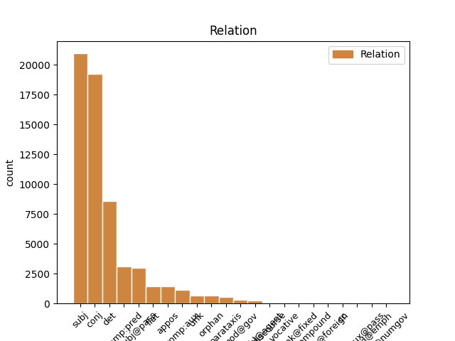
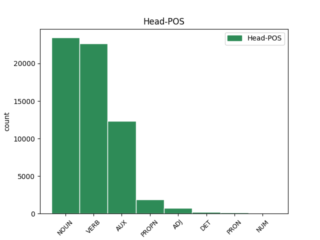
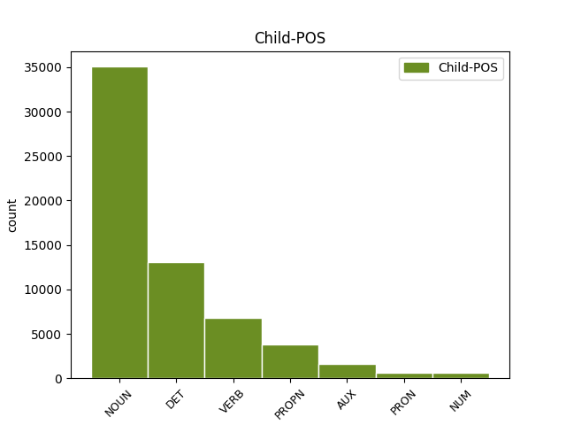

Distribution of features within this leaf



Agreement Rules sorted by frequency.
- When the dependent token is the subject(subj) of the head token, and the dependent token is NOUN.
1 Naproti _ _ _ _ 0 _ _ _
2 tomu _ _ _ _ 0 _ _ _
3 prvky _ _ _ _ 0 _ _ _
4 , _ _ _ _ 0 _ _ _
5 kterým _ _ _ _ 0 _ _ _
6 chybí chybět VERB VB-S---3P-AA--- Aspect=Imp|Mood=Ind|Number=Sing|Person=3|Polarity=Pos|Tense=Pres|VerbForm=Fin|Voice=Act 0 _ _ _
7 jeden _ _ _ _ 0 _ _ _
8 obvodový _ _ _ _ 0 _ _ _
9 elektron elektron NOUN NNIS1-----A---- Animacy=Inan|Case=Nom|Gender=Masc|Number=Sing|Polarity=Pos 6 subj _ _
10 do _ _ _ _ 0 _ _ _
11 úplného _ _ _ _ 0 _ _ _
12 obsazení _ _ _ _ 0 _ _ _
13 krajní _ _ _ _ 0 _ _ _
14 slupky _ _ _ _ 0 _ _ _
15 a _ _ _ _ 0 _ _ _
16 tvoří _ _ _ _ 0 _ _ _
17 jednomocné _ _ _ _ 0 _ _ _
18 záporné _ _ _ _ 0 _ _ _
19 ionty _ _ _ _ 0 _ _ _
20 a _ _ _ _ 0 _ _ _
21 vznikající _ _ _ _ 0 _ _ _
22 připoutáním _ _ _ _ 0 _ _ _
23 dalšího _ _ _ _ 0 _ _ _
24 elektronu _ _ _ _ 0 _ _ _
25 . _ _ _ _ 0 _ _ _
1 Elektronům _ _ _ _ 0 _ _ _
2 v _ _ _ _ 0 _ _ _
3 úplných _ _ _ _ 0 _ _ _
4 vnitřních _ _ _ _ 0 _ _ _
5 slupkách _ _ _ _ 0 _ _ _
6 říkáme _ _ _ _ 0 _ _ _
7 vnitřní _ _ _ _ 0 _ _ _
8 , _ _ _ _ 0 _ _ _
9 elektronům _ _ _ _ 0 _ _ _
10 v _ _ _ _ 0 _ _ _
11 krajní _ _ _ _ 0 _ _ _
12 slupce _ _ _ _ 0 _ _ _
13 obvodové _ _ _ _ 0 _ _ _
14 nebo _ _ _ _ 0 _ _ _
15 optické _ _ _ _ 0 _ _ _
16 či _ _ _ _ 0 _ _ _
17 valenční _ _ _ _ 0 _ _ _
18 , _ _ _ _ 0 _ _ _
19 protože _ _ _ _ 0 _ _ _
20 jejich _ _ _ _ 0 _ _ _
21 uspořádání uspořádání NOUN NNNS1-----A---- Case=Nom|Gender=Neut|Number=Sing|Polarity=Pos 0 _ _ _
22 a _ _ _ _ 0 _ _ _
23 počet počet NOUN NNIS1-----A---- Animacy=Inan|Case=Nom|Gender=Masc|Number=Sing|Polarity=Pos 21 conj _ _
24 určuje _ _ _ _ 0 _ _ _
25 optická _ _ _ _ 0 _ _ _
26 spektra _ _ _ _ 0 _ _ _
27 a _ _ _ _ 0 _ _ _
28 mocenství _ _ _ _ 0 _ _ _
29 prvků _ _ _ _ 0 _ _ _
30 . _ _ _ _ 0 _ _ _
1 Prvky _ _ _ _ 0 _ _ _
2 s _ _ _ _ 0 _ _ _
3 jedním _ _ _ _ 0 _ _ _
4 obvodovým _ _ _ _ 0 _ _ _
5 elektronem _ _ _ _ 0 _ _ _
6 tvoří _ _ _ _ 0 _ _ _
7 kladné _ _ _ _ 0 _ _ _
8 jednomocné _ _ _ _ 0 _ _ _
9 ionty _ _ _ _ 0 _ _ _
10 , _ _ _ _ 0 _ _ _
11 které _ _ _ _ 0 _ _ _
12 vzniknou _ _ _ _ 0 _ _ _
13 odtržením _ _ _ _ 0 _ _ _
14 tohoto tento DET PDZS2---------- Case=Gen|Gender=Masc,Neut|Number=Sing|PronType=Dem 15 det _ _
15 elektronu elektron NOUN NNIS2-----A---- Animacy=Inan|Case=Gen|Gender=Masc|Number=Sing|Polarity=Pos 0 _ _ _
16 . _ _ _ _ 0 _ _ _
1 První _ _ _ _ 0 _ _ _
2 vodorovná _ _ _ _ 0 _ _ _
3 dokazuje dokazovat VERB VB-S---3P-AA--- Aspect=Imp|Mood=Ind|Number=Sing|Person=3|Polarity=Pos|Tense=Pres|VerbForm=Fin|Voice=Act 0 _ _ _
4 , _ _ _ _ 0 _ _ _
5 v _ _ _ _ 0 _ _ _
6 níž _ _ _ _ 0 _ _ _
7 je _ _ _ _ 0 _ _ _
8 pouze _ _ _ _ 0 _ _ _
9 vodík _ _ _ _ 0 _ _ _
10 a _ _ _ _ 0 _ _ _
11 helium _ _ _ _ 0 _ _ _
12 , _ _ _ _ 0 _ _ _
13 je být VERB VB-S---3P-AA--- Mood=Ind|Number=Sing|Person=3|Polarity=Pos|Tense=Pres|VerbForm=Fin|Voice=Act 3 conj _ _
14 rudimentární _ _ _ _ 0 _ _ _
15 perioda _ _ _ _ 0 _ _ _
16 , _ _ _ _ 0 _ _ _
17 rudimentum _ _ _ _ 0 _ _ _
18 , _ _ _ _ 0 _ _ _
19 zákrsek _ _ _ _ 0 _ _ _
20 , _ _ _ _ 0 _ _ _
21 nedokonalý _ _ _ _ 0 _ _ _
22 počátek _ _ _ _ 0 _ _ _
23 . _ _ _ _ 0 _ _ _
1 Prvky _ _ _ _ 0 _ _ _
2 s _ _ _ _ 0 _ _ _
3 jedním _ _ _ _ 0 _ _ _
4 obvodovým _ _ _ _ 0 _ _ _
5 elektronem _ _ _ _ 0 _ _ _
6 tvoří _ _ _ _ 0 _ _ _
7 kladné _ _ _ _ 0 _ _ _
8 jednomocné _ _ _ _ 0 _ _ _
9 ionty _ _ _ _ 0 _ _ _
10 , _ _ _ _ 0 _ _ _
11 které který DET P4IP1---------- Animacy=Inan|Case=Nom|Gender=Masc|Number=Plur|PronType=Int,Rel 12 subj _ _
12 vzniknou vzniknout VERB VB-P---3P-AA--- Aspect=Perf|Mood=Ind|Number=Plur|Person=3|Polarity=Pos|Tense=Pres|VerbForm=Fin|Voice=Act 0 _ _ _
13 odtržením _ _ _ _ 0 _ _ _
14 tohoto _ _ _ _ 0 _ _ _
15 elektronu _ _ _ _ 0 _ _ _
16 . _ _ _ _ 0 _ _ _
1 Elektrony elektron NOUN NNIP1-----A---- Animacy=Inan|Case=Nom|Gender=Masc|Number=Plur|Polarity=Pos 6 subj@pass _ _
2 v _ _ _ _ 0 _ _ _
3 neúplné _ _ _ _ 0 _ _ _
4 sféře _ _ _ _ 0 _ _ _
5 slupce _ _ _ _ 0 _ _ _
6 jsou být AUX VB-P---3P-AA--- Mood=Ind|Number=Plur|Person=3|Polarity=Pos|Tense=Pres|VerbForm=Fin|Voice=Act 0 _ _ _
7 poutány _ _ _ _ 0 _ _ _
8 k _ _ _ _ 0 _ _ _
9 jádru _ _ _ _ 0 _ _ _
10 tím _ _ _ _ 0 _ _ _
11 slaběji _ _ _ _ 0 _ _ _
12 , _ _ _ _ 0 _ _ _
13 čím _ _ _ _ 0 _ _ _
14 méně _ _ _ _ 0 _ _ _
15 obsahuje _ _ _ _ 0 _ _ _
16 elektronů _ _ _ _ 0 _ _ _
17 . _ _ _ _ 0 _ _ _
1 Jsou být AUX VB-P---3P-AA--- Mood=Ind|Number=Plur|Person=3|Polarity=Pos|Tense=Pres|VerbForm=Fin|Voice=Act 0 _ _ _
2 to _ _ _ _ 0 _ _ _
3 vzácné _ _ _ _ 0 _ _ _
4 , _ _ _ _ 0 _ _ _
5 netečné _ _ _ _ 0 _ _ _
6 neboli _ _ _ _ 0 _ _ _
7 inertní _ _ _ _ 0 _ _ _
8 plyny plyn NOUN NNIP1-----A---- Animacy=Inan|Case=Nom|Gender=Masc|Number=Plur|Polarity=Pos 1 comp:pred _ SpaceAfter=No
9 , _ _ _ _ 0 _ _ _
10 jejichž _ _ _ _ 0 _ _ _
11 molekuly _ _ _ _ 0 _ _ _
12 jsou _ _ _ _ 0 _ _ _
13 jednoatomové _ _ _ _ 0 _ _ _
14 . _ _ _ _ 0 _ _ _
1 V _ _ _ _ 0 _ _ _
2 # _ _ _ _ 0 _ _ _
3 sestavil _ _ _ _ 0 _ _ _
4 ruský _ _ _ _ 0 _ _ _
5 chemik chemik NOUN NNMS1-----A---- Animacy=Anim|Case=Nom|Gender=Masc|Number=Sing|Polarity=Pos 0 _ _ _
6 Mendělejev Mendělejev PROPN NNMS1-----A---- Animacy=Anim|Case=Nom|Gender=Masc|NameType=Sur|Number=Sing|Polarity=Pos 5 flat _ _
7 prvky _ _ _ _ 0 _ _ _
8 do _ _ _ _ 0 _ _ _
9 periodické _ _ _ _ 0 _ _ _
10 soustavy _ _ _ _ 0 _ _ _
11 , _ _ _ _ 0 _ _ _
12 která _ _ _ _ 0 _ _ _
13 je _ _ _ _ 0 _ _ _
14 připojena _ _ _ _ 0 _ _ _
15 . _ _ _ _ 0 _ _ _
1 K _ _ _ _ 0 _ _ _
2 dalšímu _ _ _ _ 0 _ _ _
3 inertnímu _ _ _ _ 0 _ _ _
4 plynu plyn NOUN NNIS3-----A---- Animacy=Inan|Case=Dat|Gender=Masc|Number=Sing|Polarity=Pos 0 _ _ _
5 , _ _ _ _ 0 _ _ _
6 argonu argon NOUN NNIS3-----A---- Animacy=Inan|Case=Dat|Gender=Masc|Number=Sing|Polarity=Pos 4 appos _ SpaceAfter=No
7 , _ _ _ _ 0 _ _ _
8 dojdeme _ _ _ _ 0 _ _ _
9 však _ _ _ _ 0 _ _ _
10 připojením _ _ _ _ 0 _ _ _
11 pouhých _ _ _ _ 0 _ _ _
12 osmi _ _ _ _ 0 _ _ _
13 elektronů _ _ _ _ 0 _ _ _
14 . _ _ _ _ 0 _ _ _
1 Dosud _ _ _ _ 0 _ _ _
2 jsme být AUX VB-P---1P-AA--- Mood=Ind|Number=Plur|Person=1|Polarity=Pos|Tense=Pres|VerbForm=Fin|Voice=Act 0 _ _ _
3 uvažovali uvažovat VERB VpMP---XR-AA--- Animacy=Anim|Aspect=Imp|Gender=Masc|Number=Plur|Polarity=Pos|Tense=Past|VerbForm=Part|Voice=Act 2 comp:aux _ _
4 dráhy _ _ _ _ 0 _ _ _
5 elektronů _ _ _ _ 0 _ _ _
6 v _ _ _ _ 0 _ _ _
7 rovině _ _ _ _ 0 _ _ _
8 . _ _ _ _ 0 _ _ _
1 Podle _ _ _ _ 0 _ _ _
2 Moseleyova _ _ _ _ 0 _ _ _
3 zákona _ _ _ _ 0 _ _ _
4 odmocnina _ _ _ _ 0 _ _ _
5 z _ _ _ _ 0 _ _ _
6 vlnočtu _ _ _ _ 0 _ _ _
7 se _ _ _ _ 0 _ _ _
8 při _ _ _ _ 0 _ _ _
9 postupu _ _ _ _ 0 _ _ _
10 od _ _ _ _ 0 _ _ _
11 jednoho _ _ _ _ 0 _ _ _
12 prvku _ _ _ _ 0 _ _ _
13 k _ _ _ _ 0 _ _ _
14 následujícímu _ _ _ _ 0 _ _ _
15 vždycky _ _ _ _ 0 _ _ _
16 zvýší zvýšit VERB VB-S---3P-AA--- Aspect=Perf|Mood=Ind|Number=Sing|Person=3|Polarity=Pos|Tense=Pres|VerbForm=Fin|Voice=Act 0 _ _ _
17 o _ _ _ _ 0 _ _ _
18 stejnou _ _ _ _ 0 _ _ _
19 hodnotu _ _ _ _ 0 _ _ _
20 , _ _ _ _ 0 _ _ _
21 neboť _ _ _ _ 0 _ _ _
22 kde _ _ _ _ 0 _ _ _
23 je být AUX VB-S---3P-AA--- Mood=Ind|Number=Sing|Person=3|Polarity=Pos|Tense=Pres|VerbForm=Fin|Voice=Act 16 conj _ _
24 atomové _ _ _ _ 0 _ _ _
25 číslo _ _ _ _ 0 _ _ _
26 prvku _ _ _ _ 0 _ _ _
27 konstanty _ _ _ _ 0 _ _ _
28 * _ _ _ _ 0 _ _ _
29 . _ _ _ _ 0 _ _ _
1 Moseley Moseley PROPN NNMS1-----A---- Animacy=Anim|Case=Nom|Gender=Masc|NameType=Sur|Number=Sing|Polarity=Pos 2 subj _ _
2 zjistil zjistit VERB VpYS---XR-AA--- Aspect=Perf|Gender=Masc|Number=Sing|Polarity=Pos|Tense=Past|VerbForm=Part|Voice=Act 0 _ _ _
3 , _ _ _ _ 0 _ _ _
4 že _ _ _ _ 0 _ _ _
5 série _ _ _ _ 0 _ _ _
6 * _ _ _ _ 0 _ _ _
7 a _ _ _ _ 0 _ _ _
8 * _ _ _ _ 0 _ _ _
9 se _ _ _ _ 0 _ _ _
10 u _ _ _ _ 0 _ _ _
11 různých _ _ _ _ 0 _ _ _
12 prvků _ _ _ _ 0 _ _ _
13 navzájem _ _ _ _ 0 _ _ _
14 podobají _ _ _ _ 0 _ _ _
15 a _ _ _ _ 0 _ _ _
16 s _ _ _ _ 0 _ _ _
17 rostoucím _ _ _ _ 0 _ _ _
18 atomovým _ _ _ _ 0 _ _ _
19 číslem _ _ _ _ 0 _ _ _
20 , _ _ _ _ 0 _ _ _
21 pořadovým _ _ _ _ 0 _ _ _
22 číslem _ _ _ _ 0 _ _ _
23 v _ _ _ _ 0 _ _ _
24 soustavě _ _ _ _ 0 _ _ _
25 prvků _ _ _ _ 0 _ _ _
26 , _ _ _ _ 0 _ _ _
27 se _ _ _ _ 0 _ _ _
28 posouvají _ _ _ _ 0 _ _ _
29 ke _ _ _ _ 0 _ _ _
30 kratším _ _ _ _ 0 _ _ _
31 vlnovým _ _ _ _ 0 _ _ _
32 délkám _ _ _ _ 0 _ _ _
33 neboli _ _ _ _ 0 _ _ _
34 k _ _ _ _ 0 _ _ _
35 větším _ _ _ _ 0 _ _ _
36 vlnočtům _ _ _ _ 0 _ _ _
37 . _ _ _ _ 0 _ _ _
1 Již _ _ _ _ 0 _ _ _
2 předtím _ _ _ _ 0 _ _ _
3 studovala _ _ _ _ 0 _ _ _
4 rozptyl _ _ _ _ 0 _ _ _
5 částic _ _ _ _ 0 _ _ _
6 paní _ _ _ _ 0 _ _ _
7 Curieová Curieová PROPN NNFS1-----A---- Case=Nom|Gender=Fem|NameType=Sur|Number=Sing|Polarity=Pos 0 _ _ _
8 - _ _ _ _ 0 _ _ _
9 Sklodowská Sklodowská PROPN NNFS1-----A---- Case=Nom|Gender=Fem|NameType=Sur|Number=Sing|Polarity=Pos 7 conj _ SpaceAfter=No
10 v _ _ _ _ 0 _ _ _
11 Paříži _ _ _ _ 0 _ _ _
12 . _ _ _ _ 0 _ _ _
1 Horedt _ _ _ _ 0 _ _ _
2 zkoumal _ _ _ _ 0 _ _ _
3 možnost _ _ _ _ 0 _ _ _
4 zachycení _ _ _ _ 0 _ _ _
5 v _ _ _ _ 0 _ _ _
6 omezeném _ _ _ _ 0 _ _ _
7 kruhovém _ _ _ _ 0 _ _ _
8 problému _ _ _ _ 0 _ _ _
9 tří _ _ _ _ 0 _ _ _
10 těles _ _ _ _ 0 _ _ _
11 , _ _ _ _ 0 _ _ _
12 dvě _ _ _ _ 0 _ _ _
13 velká _ _ _ _ 0 _ _ _
14 tělesa _ _ _ _ 0 _ _ _
15 se _ _ _ _ 0 _ _ _
16 pohybují _ _ _ _ 0 _ _ _
17 kolem _ _ _ _ 0 _ _ _
18 sebe _ _ _ _ 0 _ _ _
19 po _ _ _ _ 0 _ _ _
20 kružnici _ _ _ _ 0 _ _ _
21 , _ _ _ _ 0 _ _ _
22 všechny _ _ _ _ 0 _ _ _
23 další _ _ _ _ 0 _ _ _
24 částice _ _ _ _ 0 _ _ _
25 mají _ _ _ _ 0 _ _ _
26 tak _ _ _ _ 0 _ _ _
27 malou _ _ _ _ 0 _ _ _
28 hmotu _ _ _ _ 0 _ _ _
29 , _ _ _ _ 0 _ _ _
30 že _ _ _ _ 0 _ _ _
31 neovlivňují _ _ _ _ 0 _ _ _
32 velká _ _ _ _ 0 _ _ _
33 tělesa _ _ _ _ 0 _ _ _
34 ani _ _ _ _ 0 _ _ _
35 sebe _ _ _ _ 0 _ _ _
36 navzájem _ _ _ _ 0 _ _ _
37 , _ _ _ _ 0 _ _ _
38 z _ _ _ _ 0 _ _ _
39 hlediska _ _ _ _ 0 _ _ _
40 pravděpodobnosti _ _ _ _ 0 _ _ _
41 , _ _ _ _ 0 _ _ _
42 jaký jaký DET P4YS1---------- Case=Nom|Gender=Masc|Number=Sing|PronType=Int,Rel 43 comp:pred _ _
43 bude být AUX VB-S---3F-AA--- Mood=Ind|Number=Sing|Person=3|Polarity=Pos|Tense=Fut|VerbForm=Fin|Voice=Act 0 _ _ _
44 charakter _ _ _ _ 0 _ _ _
45 pohybu _ _ _ _ 0 _ _ _
46 částice _ _ _ _ 0 _ _ _
47 po _ _ _ _ 0 _ _ _
48 setkání _ _ _ _ 0 _ _ _
49 . _ _ _ _ 0 _ _ _
1 Jestliže _ _ _ _ 0 _ _ _
2 však _ _ _ _ 0 _ _ _
3 zanedbatelné _ _ _ _ 0 _ _ _
4 nejsou _ _ _ _ 0 _ _ _
5 , _ _ _ _ 0 _ _ _
6 potom _ _ _ _ 0 _ _ _
7 se _ _ _ _ 0 _ _ _
8 mechanika _ _ _ _ 0 _ _ _
9 hmotných _ _ _ _ 0 _ _ _
10 bodů _ _ _ _ 0 _ _ _
11 změní _ _ _ _ 0 _ _ _
12 v _ _ _ _ 0 _ _ _
13 mechaniku _ _ _ _ 0 _ _ _
14 skutečných _ _ _ _ 0 _ _ _
15 těles _ _ _ _ 0 _ _ _
16 a _ _ _ _ 0 _ _ _
17 všechno všechno PRON PLNS1---------- Case=Nom|Gender=Neut|Number=Sing|PronType=Tot 20 subj _ _
18 se _ _ _ _ 0 _ _ _
19 značně _ _ _ _ 0 _ _ _
20 zkomplikuje zkomplikovat VERB VB-S---3P-AA--- Aspect=Perf|Mood=Ind|Number=Sing|Person=3|Polarity=Pos|Tense=Pres|VerbForm=Fin|Voice=Act 0 _ _ _
21 . _ _ _ _ 0 _ _ _
1 Čtvrtá _ _ _ _ 0 _ _ _
2 a _ _ _ _ 0 _ _ _
3 pátá _ _ _ _ 0 _ _ _
4 vodorovná _ _ _ _ 0 _ _ _
5 řada _ _ _ _ 0 _ _ _
6 tvoří _ _ _ _ 0 _ _ _
7 první _ _ _ _ 0 _ _ _
8 dvojnásobnou _ _ _ _ 0 _ _ _
9 periodu _ _ _ _ 0 _ _ _
10 celkem _ _ _ _ 0 _ _ _
11 # _ _ _ _ 0 _ _ _
12 prvků _ _ _ _ 0 _ _ _
13 a _ _ _ _ 0 _ _ _
14 šestá _ _ _ _ 0 _ _ _
15 a _ _ _ _ 0 _ _ _
16 sedmá _ _ _ _ 0 _ _ _
17 řada řada NOUN NNFS1-----A---- Case=Nom|Gender=Fem|Number=Sing|Polarity=Pos 0 _ _ _
18 druhou _ _ _ _ 0 _ _ _
19 dvojnásobnou _ _ _ _ 0 _ _ _
20 periodu perioda NOUN NNFS4-----A---- Case=Acc|Gender=Fem|Number=Sing|Polarity=Pos 17 orphan _ _
21 rovněž _ _ _ _ 0 _ _ _
22 # _ _ _ _ 0 _ _ _
23 prvků _ _ _ _ 0 _ _ _
24 . _ _ _ _ 0 _ _ _
1 Vlnové _ _ _ _ 0 _ _ _
2 délky _ _ _ _ 0 _ _ _
3 charakteristického _ _ _ _ 0 _ _ _
4 záření _ _ _ _ 0 _ _ _
5 závisí _ _ _ _ 0 _ _ _
6 na _ _ _ _ 0 _ _ _
7 * _ _ _ _ 0 _ _ _
8 anody _ _ _ _ 0 _ _ _
9 , _ _ _ _ 0 _ _ _
10 neboť _ _ _ _ 0 _ _ _
11 elektron _ _ _ _ 0 _ _ _
12 vymrštěný _ _ _ _ 0 _ _ _
13 z _ _ _ _ 0 _ _ _
14 katody _ _ _ _ 0 _ _ _
15 vyrazí vyrazit VERB VB-S---3P-AA--- Aspect=Perf|Mood=Ind|Number=Sing|Person=3|Polarity=Pos|Tense=Pres|VerbForm=Fin|Voice=Act 0 _ _ _
16 z _ _ _ _ 0 _ _ _
17 vnitřní _ _ _ _ 0 _ _ _
18 sféry _ _ _ _ 0 _ _ _
19 atomu _ _ _ _ 0 _ _ _
20 , _ _ _ _ 0 _ _ _
21 na _ _ _ _ 0 _ _ _
22 anodě _ _ _ _ 0 _ _ _
23 z _ _ _ _ 0 _ _ _
24 jednokvantové _ _ _ _ 0 _ _ _
25 sféry _ _ _ _ 0 _ _ _
26 * _ _ _ _ 0 _ _ _
27 elektron elektron NOUN NNIS4-----A---- Animacy=Inan|Case=Acc|Gender=Masc|Number=Sing|Polarity=Pos 15 unk _ SpaceAfter=No
28 , _ _ _ _ 0 _ _ _
29 na _ _ _ _ 0 _ _ _
30 jehož _ _ _ _ 0 _ _ _
31 místo _ _ _ _ 0 _ _ _
32 přeskočí _ _ _ _ 0 _ _ _
33 některý _ _ _ _ 0 _ _ _
34 jiný _ _ _ _ 0 _ _ _
35 elektron _ _ _ _ 0 _ _ _
36 ze _ _ _ _ 0 _ _ _
37 sféry _ _ _ _ 0 _ _ _
38 . _ _ _ _ 0 _ _ _
1 První _ _ _ _ 0 _ _ _
2 vodorovná _ _ _ _ 0 _ _ _
3 dokazuje dokazovat VERB VB-S---3P-AA--- Aspect=Imp|Mood=Ind|Number=Sing|Person=3|Polarity=Pos|Tense=Pres|VerbForm=Fin|Voice=Act 0 _ _ _
4 , _ _ _ _ 0 _ _ _
5 v _ _ _ _ 0 _ _ _
6 níž _ _ _ _ 0 _ _ _
7 je být VERB VB-S---3P-AA--- Mood=Ind|Number=Sing|Person=3|Polarity=Pos|Tense=Pres|VerbForm=Fin|Voice=Act 3 parataxis _ _
8 pouze _ _ _ _ 0 _ _ _
9 vodík _ _ _ _ 0 _ _ _
10 a _ _ _ _ 0 _ _ _
11 helium _ _ _ _ 0 _ _ _
12 , _ _ _ _ 0 _ _ _
13 je _ _ _ _ 0 _ _ _
14 rudimentární _ _ _ _ 0 _ _ _
15 perioda _ _ _ _ 0 _ _ _
16 , _ _ _ _ 0 _ _ _
17 rudimentum _ _ _ _ 0 _ _ _
18 , _ _ _ _ 0 _ _ _
19 zákrsek _ _ _ _ 0 _ _ _
20 , _ _ _ _ 0 _ _ _
21 nedokonalý _ _ _ _ 0 _ _ _
22 počátek _ _ _ _ 0 _ _ _
23 . _ _ _ _ 0 _ _ _
1 Byla _ _ _ _ 0 _ _ _
2 proto _ _ _ _ 0 _ _ _
3 stanovena _ _ _ _ 0 _ _ _
4 výběrová _ _ _ _ 0 _ _ _
5 pravidla _ _ _ _ 0 _ _ _
6 určující _ _ _ _ 0 _ _ _
7 , _ _ _ _ 0 _ _ _
8 které který DET P4IP1---------- Animacy=Inan|Case=Nom|Gender=Masc|Number=Plur|PronType=Int,Rel 12 subj@pass _ _
9 z _ _ _ _ 0 _ _ _
10 možných _ _ _ _ 0 _ _ _
11 přechodů _ _ _ _ 0 _ _ _
12 jsou být AUX VB-P---3P-AA--- Mood=Ind|Number=Plur|Person=3|Polarity=Pos|Tense=Pres|VerbForm=Fin|Voice=Act 0 _ _ _
13 dovoleny _ _ _ _ 0 _ _ _
14 . _ _ _ _ 0 _ _ _
1 Elektron _ _ _ _ 0 _ _ _
2 je _ _ _ _ 0 _ _ _
3 jádrem jádro NOUN NNNS7-----A---- Case=Ins|Gender=Neut|Number=Sing|Polarity=Pos 4 comp:obl@agent _ _
4 přitahován přitahovaný ADJ VsYS---XX-AP--- Aspect=Imp|Gender=Masc|Number=Sing|Polarity=Pos|Variant=Short|VerbForm=Part|Voice=Pass 0 _ _ _
5 podle _ _ _ _ 0 _ _ _
6 Coulombova _ _ _ _ 0 _ _ _
7 zákona _ _ _ _ 0 _ _ _
8 stejně _ _ _ _ 0 _ _ _
9 jako _ _ _ _ 0 _ _ _
10 elektrický _ _ _ _ 0 _ _ _
11 náboj _ _ _ _ 0 _ _ _
12 od _ _ _ _ 0 _ _ _
13 druhého _ _ _ _ 0 _ _ _
14 náboje _ _ _ _ 0 _ _ _
15 . _ _ _ _ 0 _ _ _
1 Jde _ _ _ _ 0 _ _ _
2 tu _ _ _ _ 0 _ _ _
3 především _ _ _ _ 0 _ _ _
4 o _ _ _ _ 0 _ _ _
5 nonreprezentativní _ _ _ _ 0 _ _ _
6 mediační _ _ _ _ 0 _ _ _
7 teorii _ _ _ _ 0 _ _ _
8 , _ _ _ _ 0 _ _ _
9 kterou _ _ _ _ 0 _ _ _
10 zastávají _ _ _ _ 0 _ _ _
11 Bousfield _ _ _ _ 0 _ _ _
12 , _ _ _ _ 0 _ _ _
13 Jenkins _ _ _ _ 0 _ _ _
14 , _ _ _ _ 0 _ _ _
15 Patermo _ _ _ _ 0 _ _ _
16 a _ _ _ _ 0 _ _ _
17 s _ _ _ _ 0 _ _ _
18 určitým _ _ _ _ 0 _ _ _
19 odstínem odstín NOUN NNIS7-----A---- Animacy=Inan|Case=Ins|Gender=Masc|Number=Sing|Polarity=Pos 0 _ _ _
20 i _ _ _ _ 0 _ _ _
21 Braine Braine PROPN NNMS1-----A---- Animacy=Anim|Case=Nom|Gender=Masc|NameType=Sur|Number=Sing|Polarity=Pos 19 orphan _ SpaceAfter=No
22 , _ _ _ _ 0 _ _ _
23 a _ _ _ _ 0 _ _ _
24 různě _ _ _ _ 0 _ _ _
25 odstínovanou _ _ _ _ 0 _ _ _
26 reprezentační _ _ _ _ 0 _ _ _
27 mediační _ _ _ _ 0 _ _ _
28 teorii _ _ _ _ 0 _ _ _
29 představovanou _ _ _ _ 0 _ _ _
30 Mowrenem _ _ _ _ 0 _ _ _
31 a _ _ _ _ 0 _ _ _
32 Osgoodem _ _ _ _ 0 _ _ _
33 . _ _ _ _ 0 _ _ _
1 Hmotová _ _ _ _ 0 _ _ _
2 jednotka _ _ _ _ 0 _ _ _
3 je být AUX VB-S---3P-AA--- Mood=Ind|Number=Sing|Person=3|Polarity=Pos|Tense=Pres|VerbForm=Fin|Voice=Act 0 _ _ _
4 dvanáctina dvanáctina NUM CyFS1---------- Case=Nom|Gender=Fem|Number=Sing|NumType=Frac 3 comp:pred _ LDeriv=dvan`12|LNumValue=12
5 hmoty _ _ _ _ 0 _ _ _
6 uhlíku _ _ _ _ 0 _ _ _
7 atomové _ _ _ _ 0 _ _ _
8 hmoty _ _ _ _ 0 _ _ _
9 . _ _ _ _ 0 _ _ _
1 I _ _ _ _ 0 _ _ _
2 když _ _ _ _ 0 _ _ _
3 rušení _ _ _ _ 0 _ _ _
4 harmonická _ _ _ _ 0 _ _ _
5 už _ _ _ _ 0 _ _ _
6 s _ _ _ _ 0 _ _ _
7 ohledem _ _ _ _ 0 _ _ _
8 na _ _ _ _ 0 _ _ _
9 svou _ _ _ _ 0 _ _ _
10 velikost _ _ _ _ 0 _ _ _
11 může _ _ _ _ 0 _ _ _
12 působit _ _ _ _ 0 _ _ _
13 rušení _ _ _ _ 0 _ _ _
14 , _ _ _ _ 0 _ _ _
15 zpravidla _ _ _ _ 0 _ _ _
16 se _ _ _ _ 0 _ _ _
17 neuvažuje _ _ _ _ 0 _ _ _
18 , _ _ _ _ 0 _ _ _
19 neboť _ _ _ _ 0 _ _ _
20 jak _ _ _ _ 0 _ _ _
21 bylo být AUX VpNS---XR-AA--- Gender=Neut|Number=Sing|Polarity=Pos|Tense=Past|VerbForm=Part|Voice=Act 24 parataxis _ _
22 uvedeno _ _ _ _ 0 _ _ _
23 , _ _ _ _ 0 _ _ _
24 nese nést VERB VB-S---3P-AA--- Mood=Ind|Number=Sing|Person=3|Polarity=Pos|Tense=Pres|VerbForm=Fin|Voice=Act 0 _ _ _
25 žádoucí _ _ _ _ 0 _ _ _
26 efekt _ _ _ _ 0 _ _ _
27 výkon _ _ _ _ 0 _ _ _
28 . _ _ _ _ 0 _ _ _
1 Jako _ _ _ _ 0 _ _ _
2 testovací _ _ _ _ 0 _ _ _
3 objekty _ _ _ _ 0 _ _ _
4 si _ _ _ _ 0 _ _ _
5 zvolil _ _ _ _ 0 _ _ _
6 krátkoperiodické _ _ _ _ 0 _ _ _
7 komety _ _ _ _ 0 _ _ _
8 se _ _ _ _ 0 _ _ _
9 vzdálenými _ _ _ _ 0 _ _ _
10 afely _ _ _ _ 0 _ _ _
11 a _ _ _ _ 0 _ _ _
12 na _ _ _ _ 0 _ _ _
13 základě _ _ _ _ 0 _ _ _
14 studia _ _ _ _ 0 _ _ _
15 jejich _ _ _ _ 0 _ _ _
16 drah _ _ _ _ 0 _ _ _
17 vyslovil _ _ _ _ 0 _ _ _
18 hypotézu _ _ _ _ 0 _ _ _
19 , _ _ _ _ 0 _ _ _
20 že _ _ _ _ 0 _ _ _
21 existují _ _ _ _ 0 _ _ _
22 dvě _ _ _ _ 0 _ _ _
23 transplutonské _ _ _ _ 0 _ _ _
24 planety _ _ _ _ 0 _ _ _
25 , _ _ _ _ 0 _ _ _
26 z _ _ _ _ 0 _ _ _
27 nichž _ _ _ _ 0 _ _ _
28 jedna jeden NUM ClFS1---------- Case=Nom|Gender=Fem|Number=Sing|NumForm=Word|NumType=Card|NumValue=1,2,3 29 subj _ LNumValue=1
29 má mít VERB VB-S---3P-AA--- Mood=Ind|Number=Sing|Person=3|Polarity=Pos|Tense=Pres|VerbForm=Fin|Voice=Act 0 _ _ _
30 # _ _ _ _ 0 _ _ _
31 * _ _ _ _ 0 _ _ _
32 velkou _ _ _ _ 0 _ _ _
33 poloosu _ _ _ _ 0 _ _ _
34 a _ _ _ _ 0 _ _ _
35 druhá _ _ _ _ 0 _ _ _
36 # _ _ _ _ 0 _ _ _
37 * _ _ _ _ 0 _ _ _
38 jednotek _ _ _ _ 0 _ _ _
39 . _ _ _ _ 0 _ _ _
1 Pro _ _ _ _ 0 _ _ _
2 značku _ _ _ _ 0 _ _ _
3 malty _ _ _ _ 0 _ _ _
4 * _ _ _ _ 0 _ _ _
5 , _ _ _ _ 0 _ _ _
6 která _ _ _ _ 0 _ _ _
7 má _ _ _ _ 0 _ _ _
8 po _ _ _ _ 0 _ _ _
9 # _ _ _ _ 0 _ _ _
10 dnech _ _ _ _ 0 _ _ _
11 tvrdnutí _ _ _ _ 0 _ _ _
12 nejmenší _ _ _ _ 0 _ _ _
13 pevnost _ _ _ _ 0 _ _ _
14 v _ _ _ _ 0 _ _ _
15 tlaku _ _ _ _ 0 _ _ _
16 # _ _ _ _ 0 _ _ _
17 * _ _ _ _ 0 _ _ _
18 , _ _ _ _ 0 _ _ _
19 je být AUX VB-S---3P-AA--- Mood=Ind|Number=Sing|Person=3|Polarity=Pos|Tense=Pres|VerbForm=Fin|Voice=Act 0 _ _ _
20 směrné _ _ _ _ 0 _ _ _
21 množství _ _ _ _ 0 _ _ _
22 pojiv _ _ _ _ 0 _ _ _
23 vápna _ _ _ _ 0 _ _ _
24 a _ _ _ _ 0 _ _ _
25 cementu _ _ _ _ 0 _ _ _
26 # _ _ _ _ 0 _ _ _
27 * _ _ _ _ 0 _ _ _
28 na _ _ _ _ 0 _ _ _
29 # _ _ _ _ 0 _ _ _
30 * _ _ _ _ 0 _ _ _
31 písku _ _ _ _ 0 _ _ _
32 , _ _ _ _ 0 _ _ _
33 toto tento DET PDNS1---------- Case=Nom|Gender=Neut|Number=Sing|PronType=Dem 19 conj _ _
34 # _ _ _ _ 0 _ _ _
35 * _ _ _ _ 0 _ _ _
36 . _ _ _ _ 0 _ _ _
1 Většinou _ _ _ _ 0 _ _ _
2 se _ _ _ _ 0 _ _ _
3 používá _ _ _ _ 0 _ _ _
4 školního _ _ _ _ 0 _ _ _
5 refraktoru _ _ _ _ 0 _ _ _
6 , _ _ _ _ 0 _ _ _
7 výrobku _ _ _ _ 0 _ _ _
8 firmy _ _ _ _ 0 _ _ _
9 Carl Carl PROPN NNMS1-----A---- Animacy=Anim|Case=Nom|Gender=Masc|NameType=Giv|Number=Sing|Polarity=Pos 0 _ _ _
10 Zeiss _ _ _ _ 0 _ _ _
11 , _ _ _ _ 0 _ _ _
12 Jena Jena PROPN NNFS1-----A---- Case=Nom|Gender=Fem|NameType=Geo|Number=Sing|Polarity=Pos 9 unk _ SpaceAfter=No
13 , _ _ _ _ 0 _ _ _
14 některé _ _ _ _ 0 _ _ _
15 školní _ _ _ _ 0 _ _ _
16 hvězdárny _ _ _ _ 0 _ _ _
17 mají _ _ _ _ 0 _ _ _
18 pro _ _ _ _ 0 _ _ _
19 hromadnou _ _ _ _ 0 _ _ _
20 výuku _ _ _ _ 0 _ _ _
21 i _ _ _ _ 0 _ _ _
22 dalekohledy _ _ _ _ 0 _ _ _
23 vlastní _ _ _ _ 0 _ _ _
24 výroby _ _ _ _ 0 _ _ _
25 o _ _ _ _ 0 _ _ _
26 průměru _ _ _ _ 0 _ _ _
27 objektivu _ _ _ _ 0 _ _ _
28 kolem _ _ _ _ 0 _ _ _
29 # _ _ _ _ 0 _ _ _
30 * _ _ _ _ 0 _ _ _
31 . _ _ _ _ 0 _ _ _
1 Jíl _ _ _ _ 0 _ _ _
2 a _ _ _ _ 0 _ _ _
3 hlína _ _ _ _ 0 _ _ _
4 drží _ _ _ _ 0 _ _ _
5 v _ _ _ _ 0 _ _ _
6 půdě _ _ _ _ 0 _ _ _
7 mezi _ _ _ _ 0 _ _ _
8 kameny _ _ _ _ 0 _ _ _
9 velmi _ _ _ _ 0 _ _ _
10 dlouho _ _ _ _ 0 _ _ _
11 vlhko _ _ _ _ 0 _ _ _
12 a _ _ _ _ 0 _ _ _
13 pod _ _ _ _ 0 _ _ _
14 kameny kámen NOUN NNIP7-----A---- Animacy=Inan|Case=Ins|Gender=Masc|Number=Plur|Polarity=Pos 0 _ _ _
15 samými samý PRON PLXP7---------- Case=Ins|Number=Plur|PronType=Tot 14 comp:pred _ _
16 je _ _ _ _ 0 _ _ _
17 pak _ _ _ _ 0 _ _ _
18 vlhkost _ _ _ _ 0 _ _ _
19 ještě _ _ _ _ 0 _ _ _
20 větší _ _ _ _ 0 _ _ _
21 . _ _ _ _ 0 _ _ _
1 V _ _ _ _ 0 _ _ _
2 seznamu _ _ _ _ 0 _ _ _
3 rostlin _ _ _ _ 0 _ _ _
4 je být AUX VB-S---3P-AA--- Mood=Ind|Number=Sing|Person=3|Polarity=Pos|Tense=Pres|VerbForm=Fin|Voice=Act 0 _ _ _
5 u _ _ _ _ 0 _ _ _
6 každé _ _ _ _ 0 _ _ _
7 rostliny _ _ _ _ 0 _ _ _
8 uvedeno _ _ _ _ 0 _ _ _
9 , _ _ _ _ 0 _ _ _
10 jaký _ _ _ _ 0 _ _ _
11 si _ _ _ _ 0 _ _ _
12 činí činit VERB VB-S---3P-AA--- Aspect=Imp|Mood=Ind|Number=Sing|Person=3|Polarity=Pos|Tense=Pres|VerbForm=Fin|Voice=Act 4 subj _ _
13 nárok _ _ _ _ 0 _ _ _
14 na _ _ _ _ 0 _ _ _
15 složení _ _ _ _ 0 _ _ _
16 substrátu _ _ _ _ 0 _ _ _
17 . _ _ _ _ 0 _ _ _
1 Je _ _ _ _ 0 _ _ _
2 to _ _ _ _ 0 _ _ _
3 potřebné _ _ _ _ 0 _ _ _
4 proto _ _ _ _ 0 _ _ _
5 , _ _ _ _ 0 _ _ _
6 že _ _ _ _ 0 _ _ _
7 pomocí _ _ _ _ 0 _ _ _
8 problému _ _ _ _ 0 _ _ _
9 těles _ _ _ _ 0 _ _ _
10 se _ _ _ _ 0 _ _ _
11 někteří _ _ _ _ 0 _ _ _
12 pracovníci _ _ _ _ 0 _ _ _
13 snaží _ _ _ _ 0 _ _ _
14 vysvětlit _ _ _ _ 0 _ _ _
15 vlastnosti _ _ _ _ 0 _ _ _
16 některých _ _ _ _ 0 _ _ _
17 hvězdných _ _ _ _ 0 _ _ _
18 soustav _ _ _ _ 0 _ _ _
19 , _ _ _ _ 0 _ _ _
20 kde _ _ _ _ 0 _ _ _
21 jsme _ _ _ _ 0 _ _ _
22 svědky _ _ _ _ 0 _ _ _
23 realizace _ _ _ _ 0 _ _ _
24 problému _ _ _ _ 0 _ _ _
25 set sto NUM ClXP2---------- Case=Gen|Number=Plur|NumForm=Word|NumType=Card|NumValue=1,2,3 32 mod@gov _ LId=sto-1|LNumValue=100|SpaceAfter=No
26 , _ _ _ _ 0 _ _ _
27 tisíců _ _ _ _ 0 _ _ _
28 nebo _ _ _ _ 0 _ _ _
29 i _ _ _ _ 0 _ _ _
30 mnoha _ _ _ _ 0 _ _ _
31 miliard _ _ _ _ 0 _ _ _
32 těles těleso NOUN NNNP2-----A---- Case=Gen|Gender=Neut|Number=Plur|Polarity=Pos 0 _ _ _
33 . _ _ _ _ 0 _ _ _
1 Tato _ _ _ _ 0 _ _ _
2 unikátní _ _ _ _ 0 _ _ _
3 zahrada _ _ _ _ 0 _ _ _
4 je _ _ _ _ 0 _ _ _
5 výborně _ _ _ _ 0 _ _ _
6 vedena _ _ _ _ 0 _ _ _
7 dnes _ _ _ _ 0 _ _ _
8 vynikajícím _ _ _ _ 0 _ _ _
9 zahradnickým _ _ _ _ 0 _ _ _
10 odborníkem odborník NOUN NNMS7-----A---- Animacy=Anim|Case=Ins|Gender=Masc|Number=Sing|Polarity=Pos 0 _ _ _
11 panem pan NOUN NNMS7-----A---- Animacy=Anim|Case=Ins|Gender=Masc|Number=Sing|Polarity=Pos 10 flat _ LGloss=(oslovení)|LId=pan-1
12 Hodačem _ _ _ _ 0 _ _ _
13 . _ _ _ _ 0 _ _ _
1 Při _ _ _ _ 0 _ _ _
2 nedokonalé _ _ _ _ 0 _ _ _
3 periodicitě _ _ _ _ 0 _ _ _
4 nabývají nabývat VERB VB-P---3P-AA--- Aspect=Imp|Mood=Ind|Number=Plur|Person=3|Polarity=Pos|Tense=Pres|VerbForm=Fin|Voice=Act 0 _ _ _
5 pak _ _ _ _ 0 _ _ _
6 tyto tento DET PDFP1---------- Case=Nom|Gender=Fem|Number=Plur|PronType=Dem 4 unk _ _
7 harmonické _ _ _ _ 0 _ _ _
8 hodnot _ _ _ _ 0 _ _ _
9 , _ _ _ _ 0 _ _ _
10 které _ _ _ _ 0 _ _ _
11 ukazují _ _ _ _ 0 _ _ _
12 na _ _ _ _ 0 _ _ _
13 míru _ _ _ _ 0 _ _ _
14 neperiodičnosti _ _ _ _ 0 _ _ _
15 pozadí _ _ _ _ 0 _ _ _
16 . _ _ _ _ 0 _ _ _
1 Nebývalý _ _ _ _ 0 _ _ _
2 rozvoj rozvoj NOUN NNIS1-----A---- Animacy=Inan|Case=Nom|Gender=Masc|Number=Sing|Polarity=Pos 0 _ _ _
3 vědy _ _ _ _ 0 _ _ _
4 a _ _ _ _ 0 _ _ _
5 techniky _ _ _ _ 0 _ _ _
6 v _ _ _ _ 0 _ _ _
7 posledních _ _ _ _ 0 _ _ _
8 několika _ _ _ _ 0 _ _ _
9 desetiletích _ _ _ _ 0 _ _ _
10 , _ _ _ _ 0 _ _ _
11 vznik _ _ _ _ 0 _ _ _
12 nových _ _ _ _ 0 _ _ _
13 vědeckých _ _ _ _ 0 _ _ _
14 a _ _ _ _ 0 _ _ _
15 technických _ _ _ _ 0 _ _ _
16 oborů _ _ _ _ 0 _ _ _
17 a _ _ _ _ 0 _ _ _
18 odvětví _ _ _ _ 0 _ _ _
19 , _ _ _ _ 0 _ _ _
20 všestranná _ _ _ _ 0 _ _ _
21 aplikace _ _ _ _ 0 _ _ _
22 vědeckotechnických _ _ _ _ 0 _ _ _
23 poznatků _ _ _ _ 0 _ _ _
24 ve _ _ _ _ 0 _ _ _
25 výrobě _ _ _ _ 0 _ _ _
26 a _ _ _ _ 0 _ _ _
27 ve _ _ _ _ 0 _ _ _
28 společenské _ _ _ _ 0 _ _ _
29 praxi _ _ _ _ 0 _ _ _
30 vůbec _ _ _ _ 0 _ _ _
31 , _ _ _ _ 0 _ _ _
32 to ten DET PDNS1---------- Case=Nom|Gender=Neut|Number=Sing|PronType=Dem 2 appos _ _
33 vše _ _ _ _ 0 _ _ _
34 jsou _ _ _ _ 0 _ _ _
35 symptomy _ _ _ _ 0 _ _ _
36 nastupující _ _ _ _ 0 _ _ _
37 vědeckotechnické _ _ _ _ 0 _ _ _
38 revoluce _ _ _ _ 0 _ _ _
39 . _ _ _ _ 0 _ _ _
1 Výchova _ _ _ _ 0 _ _ _
2 , _ _ _ _ 0 _ _ _
3 to ten DET PDNS1---------- Case=Nom|Gender=Neut|Number=Sing|PronType=Dem 4 discourse _ _
4 je být AUX VB-S---3P-AA--- Mood=Ind|Number=Sing|Person=3|Polarity=Pos|Tense=Pres|VerbForm=Fin|Voice=Act 0 _ _ _
5 záměrné _ _ _ _ 0 _ _ _
6 formování _ _ _ _ 0 _ _ _
7 osobnosti _ _ _ _ 0 _ _ _
8 realizované _ _ _ _ 0 _ _ _
9 v _ _ _ _ 0 _ _ _
10 rámci _ _ _ _ 0 _ _ _
11 výchovného _ _ _ _ 0 _ _ _
12 vztahu _ _ _ _ 0 _ _ _
13 a _ _ _ _ 0 _ _ _
14 řídící _ _ _ _ 0 _ _ _
15 se _ _ _ _ 0 _ _ _
16 podle _ _ _ _ 0 _ _ _
17 výchovného _ _ _ _ 0 _ _ _
18 ideálu _ _ _ _ 0 _ _ _
19 , _ _ _ _ 0 _ _ _
20 který _ _ _ _ 0 _ _ _
21 byl _ _ _ _ 0 _ _ _
22 v _ _ _ _ 0 _ _ _
23 určité _ _ _ _ 0 _ _ _
24 skupině _ _ _ _ 0 _ _ _
25 přijat _ _ _ _ 0 _ _ _
26 . _ _ _ _ 0 _ _ _
1 Také _ _ _ _ 0 _ _ _
2 pozdější _ _ _ _ 0 _ _ _
3 první _ _ _ _ 0 _ _ _
4 český _ _ _ _ 0 _ _ _
5 král _ _ _ _ 0 _ _ _
6 Vratislav _ _ _ _ 0 _ _ _
7 # _ _ _ _ 0 _ _ _
8 , _ _ _ _ 0 _ _ _
9 stoupenec _ _ _ _ 0 _ _ _
10 slovanské _ _ _ _ 0 _ _ _
11 bohoslužby _ _ _ _ 0 _ _ _
12 , _ _ _ _ 0 _ _ _
13 pobyl _ _ _ _ 0 _ _ _
14 několik _ _ _ _ 0 _ _ _
15 let _ _ _ _ 0 _ _ _
16 v _ _ _ _ 0 _ _ _
17 exilu _ _ _ _ 0 _ _ _
18 se _ _ _ _ 0 _ _ _
19 svou _ _ _ _ 0 _ _ _
20 matkou _ _ _ _ 0 _ _ _
21 Juditou _ _ _ _ 0 _ _ _
22 na _ _ _ _ 0 _ _ _
23 dvoře _ _ _ _ 0 _ _ _
24 krále _ _ _ _ 0 _ _ _
25 Ondřeje _ _ _ _ 0 _ _ _
26 a _ _ _ _ 0 _ _ _
27 po _ _ _ _ 0 _ _ _
28 umučení _ _ _ _ 0 _ _ _
29 své _ _ _ _ 0 _ _ _
30 první _ _ _ _ 0 _ _ _
31 ženy _ _ _ _ 0 _ _ _
32 v _ _ _ _ 0 _ _ _
33 Čechách _ _ _ _ 0 _ _ _
34 se _ _ _ _ 0 _ _ _
35 oženil _ _ _ _ 0 _ _ _
36 s _ _ _ _ 0 _ _ _
37 jedinou _ _ _ _ 0 _ _ _
38 dcerou dcera NOUN NNFS7-----A---- Case=Ins|Gender=Fem|Number=Sing|Polarity=Pos 0 _ _ _
39 Ondřejovou _ _ _ _ 0 _ _ _
40 , _ _ _ _ 0 _ _ _
41 Adleitou Adleita PROPN NNFS7-----A---- Case=Ins|Gender=Fem|NameType=Giv|Number=Sing|Polarity=Pos 38 appos _ SpaceAfter=No
42 , _ _ _ _ 0 _ _ _
43 která _ _ _ _ 0 _ _ _
44 po _ _ _ _ 0 _ _ _
45 matce _ _ _ _ 0 _ _ _
46 pocházela _ _ _ _ 0 _ _ _
47 z _ _ _ _ 0 _ _ _
48 ruské _ _ _ _ 0 _ _ _
49 krve _ _ _ _ 0 _ _ _
50 Rurikovců _ _ _ _ 0 _ _ _
51 . _ _ _ _ 0 _ _ _
1 Kapacitní _ _ _ _ 0 _ _ _
2 vazbou _ _ _ _ 0 _ _ _
3 , _ _ _ _ 0 _ _ _
4 indukované _ _ _ _ 0 _ _ _
5 napětí _ _ _ _ 0 _ _ _
6 závisí záviset VERB VB-S---3P-AA--- Aspect=Imp|Mood=Ind|Number=Sing|Person=3|Polarity=Pos|Tense=Pres|VerbForm=Fin|Voice=Act 0 _ _ _
7 pouze _ _ _ _ 0 _ _ _
8 na _ _ _ _ 0 _ _ _
9 napětí _ _ _ _ 0 _ _ _
10 troleje _ _ _ _ 0 _ _ _
11 , _ _ _ _ 0 _ _ _
12 ne _ _ _ _ 0 _ _ _
13 na _ _ _ _ 0 _ _ _
14 kmitočtu _ _ _ _ 0 _ _ _
15 a _ _ _ _ 0 _ _ _
16 délce _ _ _ _ 0 _ _ _
17 souběhu _ _ _ _ 0 _ _ _
18 , _ _ _ _ 0 _ _ _
19 na _ _ _ _ 0 _ _ _
20 těchto _ _ _ _ 0 _ _ _
21 veličinách _ _ _ _ 0 _ _ _
22 závisí záviset VERB VB-S---3P-AA--- Aspect=Imp|Mood=Ind|Number=Sing|Person=3|Polarity=Pos|Tense=Pres|VerbForm=Fin|Voice=Act 6 orphan _ _
23 nabíjecí _ _ _ _ 0 _ _ _
24 proud _ _ _ _ 0 _ _ _
25 . _ _ _ _ 0 _ _ _
1 Hmotný _ _ _ _ 0 _ _ _
2 bod _ _ _ _ 0 _ _ _
3 v _ _ _ _ 0 _ _ _
4 rovině _ _ _ _ 0 _ _ _
5 má _ _ _ _ 0 _ _ _
6 dva _ _ _ _ 0 _ _ _
7 , _ _ _ _ 0 _ _ _
8 v _ _ _ _ 0 _ _ _
9 prostoru _ _ _ _ 0 _ _ _
10 tři _ _ _ _ 0 _ _ _
11 stupně _ _ _ _ 0 _ _ _
12 volnosti _ _ _ _ 0 _ _ _
13 , _ _ _ _ 0 _ _ _
14 neboť _ _ _ _ 0 _ _ _
15 jeho _ _ _ _ 0 _ _ _
16 pohyb _ _ _ _ 0 _ _ _
17 v _ _ _ _ 0 _ _ _
18 rovině _ _ _ _ 0 _ _ _
19 určují určovat VERB VB-P---3P-AA--- Aspect=Imp|Mood=Ind|Number=Plur|Person=3|Polarity=Pos|Tense=Pres|VerbForm=Fin|Voice=Act 0 _ _ _
20 dvě dva NUM ClHP1---------- Case=Nom|Gender=Fem,Neut|Number=Plur|NumForm=Word|NumType=Card|NumValue=1,2,3 19 unk _ LNumValue=2
21 a _ _ _ _ 0 _ _ _
22 v _ _ _ _ 0 _ _ _
23 * _ _ _ _ 0 _ _ _
24 tři _ _ _ _ 0 _ _ _
25 souřadnice _ _ _ _ 0 _ _ _
26 . _ _ _ _ 0 _ _ _
1 Hurdis _ _ _ _ 0 _ _ _
2 jsou _ _ _ _ 0 _ _ _
3 cihelné _ _ _ _ 0 _ _ _
4 stropní _ _ _ _ 0 _ _ _
5 desky _ _ _ _ 0 _ _ _
6 , _ _ _ _ 0 _ _ _
7 které _ _ _ _ 0 _ _ _
8 mají _ _ _ _ 0 _ _ _
9 tři tři NUM ClXP4---------- Case=Acc|Number=Plur|NumForm=Word|NumType=Card|NumValue=1,2,3 0 _ _ _
10 až _ _ _ _ 0 _ _ _
11 čtyři čtyři NUM ClXP4---------- Case=Acc|Number=Plur|NumForm=Word|NumType=Card|NumValue=1,2,3 9 conj _ LNumValue=4
12 průběžné _ _ _ _ 0 _ _ _
13 dutiny _ _ _ _ 0 _ _ _
14 a _ _ _ _ 0 _ _ _
15 jsou _ _ _ _ 0 _ _ _
16 opatřeny _ _ _ _ 0 _ _ _
17 na _ _ _ _ 0 _ _ _
18 vnějších _ _ _ _ 0 _ _ _
19 plochách _ _ _ _ 0 _ _ _
20 podélnými _ _ _ _ 0 _ _ _
21 rýhami _ _ _ _ 0 _ _ _
22 . _ _ _ _ 0 _ _ _
1 Tatíčku tatíček NOUN NNMS5-----A---- Animacy=Anim|Case=Voc|Gender=Masc|Number=Sing|Polarity=Pos 2 vocative _ _
2 dovol dovolit VERB Vi-S---2--A---- Aspect=Perf|Mood=Imp|Number=Sing|Person=2|Polarity=Pos|VerbForm=Fin 0 _ _ _
3 , _ _ _ _ 0 _ _ _
4 nedovol _ _ _ _ 0 _ _ _
5 , _ _ _ _ 0 _ _ _
6 pojedu _ _ _ _ 0 _ _ _
7 . _ _ _ _ 0 _ _ _
1 Částice _ _ _ _ 0 _ _ _
2 * _ _ _ _ 0 _ _ _
3 může _ _ _ _ 0 _ _ _
4 proletět _ _ _ _ 0 _ _ _
5 přímočaře _ _ _ _ 0 _ _ _
6 statisíci _ _ _ _ 0 _ _ _
7 atomů _ _ _ _ 0 _ _ _
8 a _ _ _ _ 0 _ _ _
9 neodchýlí _ _ _ _ 0 _ _ _
10 se _ _ _ _ 0 _ _ _
11 ze _ _ _ _ 0 _ _ _
12 svého _ _ _ _ 0 _ _ _
13 směru _ _ _ _ 0 _ _ _
14 , _ _ _ _ 0 _ _ _
15 pouze _ _ _ _ 0 _ _ _
16 ionisuje ionizovat VERB VB-S---3P-AA--- Mood=Ind|Number=Sing|Person=3|Polarity=Pos|Tense=Pres|VerbForm=Fin|Voice=Act 0 _ _ _
17 , _ _ _ _ 0 _ _ _
18 odtrhává odtrhávat VERB VB-S---3P-AA--- Aspect=Imp|Mood=Ind|Number=Sing|Person=3|Polarity=Pos|Tense=Pres|VerbForm=Fin|Voice=Act 16 appos _ LDeriv=odtrhat
19 z _ _ _ _ 0 _ _ _
20 atomu _ _ _ _ 0 _ _ _
21 elektrony _ _ _ _ 0 _ _ _
22 . _ _ _ _ 0 _ _ _
1 Projevuje _ _ _ _ 0 _ _ _
2 se _ _ _ _ 0 _ _ _
3 proto _ _ _ _ 0 _ _ _
4 tendence _ _ _ _ 0 _ _ _
5 umisťovat _ _ _ _ 0 _ _ _
6 je _ _ _ _ 0 _ _ _
7 stále _ _ _ _ 0 _ _ _
8 blíže _ _ _ _ 0 _ _ _
9 k _ _ _ _ 0 _ _ _
10 oblasti _ _ _ _ 0 _ _ _
11 spotřeby _ _ _ _ 0 _ _ _
12 , _ _ _ _ 0 _ _ _
13 takže _ _ _ _ 0 _ _ _
14 v _ _ _ _ 0 _ _ _
15 budoucnu _ _ _ _ 0 _ _ _
16 nebude _ _ _ _ 0 _ _ _
17 prakticky _ _ _ _ 0 _ _ _
18 velký _ _ _ _ 0 _ _ _
19 rozdíl _ _ _ _ 0 _ _ _
20 mezi _ _ _ _ 0 _ _ _
21 jadernými _ _ _ _ 0 _ _ _
22 zdroji _ _ _ _ 0 _ _ _
23 a _ _ _ _ 0 _ _ _
24 velkými _ _ _ _ 0 _ _ _
25 teplárnami _ _ _ _ 0 _ _ _
26 na _ _ _ _ 0 _ _ _
27 fosilní _ _ _ _ 0 _ _ _
28 paliva _ _ _ _ 0 _ _ _
29 , _ _ _ _ 0 _ _ _
30 jež jenž PRON PJXP1---------- Case=Nom|Number=Plur|PrepCase=Npr|PronType=Rel 32 subj@pass _ LGloss=(který_[ve_vedl.větě])
31 se _ _ _ _ 0 _ _ _
32 umisťují umisťovat VERB VB-P---3P-AA--- Aspect=Imp|Mood=Ind|Number=Plur|Person=3|Polarity=Pos|Tense=Pres|VerbForm=Fin|Voice=Act 0 _ _ _
33 na _ _ _ _ 0 _ _ _
34 okraji _ _ _ _ 0 _ _ _
35 zásobované _ _ _ _ 0 _ _ _
36 oblasti _ _ _ _ 0 _ _ _
37 nebo _ _ _ _ 0 _ _ _
38 v _ _ _ _ 0 _ _ _
39 určité _ _ _ _ 0 _ _ _
40 vzdálenosti _ _ _ _ 0 _ _ _
41 od _ _ _ _ 0 _ _ _
42 ní _ _ _ _ 0 _ _ _
43 . _ _ _ _ 0 _ _ _
1 Například _ _ _ _ 0 _ _ _
2 nebylo _ _ _ _ 0 _ _ _
3 to _ _ _ _ 0 _ _ _
4 naše _ _ _ _ 0 _ _ _
5 ministerstvo _ _ _ _ 0 _ _ _
6 války _ _ _ _ 0 _ _ _
7 , _ _ _ _ 0 _ _ _
8 které _ _ _ _ 0 _ _ _
9 by _ _ _ _ 0 _ _ _
10 bylo být AUX VpNS---XR-AA--- Gender=Neut|Number=Sing|Polarity=Pos|Tense=Past|VerbForm=Part|Voice=Act 0 _ _ _
11 bývalo bývat AUX VpNS---XR-AA--- Aspect=Imp|Gender=Neut|Number=Sing|Polarity=Pos|Tense=Past|VerbForm=Part|Voice=Act 10 comp:aux _ _
12 jednoho _ _ _ _ 0 _ _ _
13 dne _ _ _ _ 0 _ _ _
14 rozhodlo _ _ _ _ 0 _ _ _
15 , _ _ _ _ 0 _ _ _
16 že _ _ _ _ 0 _ _ _
17 si _ _ _ _ 0 _ _ _
18 přeje _ _ _ _ 0 _ _ _
19 mít _ _ _ _ 0 _ _ _
20 atomovou _ _ _ _ 0 _ _ _
21 bombu _ _ _ _ 0 _ _ _
22 , _ _ _ _ 0 _ _ _
23 a _ _ _ _ 0 _ _ _
24 požádalo _ _ _ _ 0 _ _ _
25 pak _ _ _ _ 0 _ _ _
26 vědu _ _ _ _ 0 _ _ _
27 , _ _ _ _ 0 _ _ _
28 aby _ _ _ _ 0 _ _ _
29 by _ _ _ _ 0 _ _ _
30 ji _ _ _ _ 0 _ _ _
31 vyrobila _ _ _ _ 0 _ _ _
32 . _ _ _ _ 0 _ _ _
1 Požadavky _ _ _ _ 0 _ _ _
2 na _ _ _ _ 0 _ _ _
3 dovoz _ _ _ _ 0 _ _ _
4 zvyšuje _ _ _ _ 0 _ _ _
5 ještě _ _ _ _ 0 _ _ _
6 skutečnost _ _ _ _ 0 _ _ _
7 , _ _ _ _ 0 _ _ _
8 že _ _ _ _ 0 _ _ _
9 značná _ _ _ _ 0 _ _ _
10 část _ _ _ _ 0 _ _ _
11 strojů _ _ _ _ 0 _ _ _
12 z _ _ _ _ 0 _ _ _
13 tuzemské _ _ _ _ 0 _ _ _
14 produkce _ _ _ _ 0 _ _ _
15 se _ _ _ _ 0 _ _ _
16 vyváží vyvážet VERB VB-S---3P-AA--- Aspect=Imp|Mood=Ind|Number=Sing|Person=3|Polarity=Pos|Tense=Pres|VerbForm=Fin|Voice=Act 0 _ _ _
17 , _ _ _ _ 0 _ _ _
18 nevyjímaje vyjímat VERB VeYS------N---- Aspect=Imp|Gender=Masc|Number=Sing|Polarity=Neg|Tense=Pres|VerbForm=Conv|Voice=Act 16 comp:pred _ _
19 hledané _ _ _ _ 0 _ _ _
20 vstřikovací _ _ _ _ 0 _ _ _
21 stroje _ _ _ _ 0 _ _ _
22 . _ _ _ _ 0 _ _ _
1 Jak _ _ _ _ 0 _ _ _
2 jsem _ _ _ _ 0 _ _ _
3 několikrát _ _ _ _ 0 _ _ _
4 shora _ _ _ _ 0 _ _ _
5 uvedl _ _ _ _ 0 _ _ _
6 , _ _ _ _ 0 _ _ _
7 upoutává _ _ _ _ 0 _ _ _
8 nás _ _ _ _ 0 _ _ _
9 na _ _ _ _ 0 _ _ _
10 každé _ _ _ _ 0 _ _ _
11 rostlině _ _ _ _ 0 _ _ _
12 její _ _ _ _ 0 _ _ _
13 vnější _ _ _ _ 0 _ _ _
14 krása _ _ _ _ 0 _ _ _
15 , _ _ _ _ 0 _ _ _
16 to ten DET PDNS1---------- Case=Nom|Gender=Neut|Number=Sing|PronType=Dem 0 _ _ _
17 jest být VERB VB-S---3P-AA--2 Mood=Ind|Number=Sing|Person=3|Polarity=Pos|Style=Arch|Tense=Pres|VerbForm=Fin|Voice=Act 16 unk@fixed _ _
18 její _ _ _ _ 0 _ _ _
19 tvar _ _ _ _ 0 _ _ _
20 a _ _ _ _ 0 _ _ _
21 barva _ _ _ _ 0 _ _ _
22 . _ _ _ _ 0 _ _ _
1 Přejde _ _ _ _ 0 _ _ _
2 se _ _ _ _ 0 _ _ _
3 na _ _ _ _ 0 _ _ _
4 diskrétní _ _ _ _ 0 _ _ _
5 proměnnou _ _ _ _ 0 _ _ _
6 , _ _ _ _ 0 _ _ _
7 integrace _ _ _ _ 0 _ _ _
8 , _ _ _ _ 0 _ _ _
9 * _ _ _ _ 0 _ _ _
10 se _ _ _ _ 0 _ _ _
11 nahradí _ _ _ _ 0 _ _ _
12 součtem součet NOUN NNIS7-----A---- Animacy=Inan|Case=Ins|Gender=Masc|Number=Sing|Polarity=Pos 0 _ _ _
13 a _ _ _ _ 0 _ _ _
14 rozdílem _ _ _ _ 0 _ _ _
15 , _ _ _ _ 0 _ _ _
16 které _ _ _ _ 0 _ _ _
17 přeskoku _ _ _ _ 0 _ _ _
18 * _ _ _ _ 0 _ _ _
19 , _ _ _ _ 0 _ _ _
20 pro _ _ _ _ 0 _ _ _
21 které _ _ _ _ 0 _ _ _
22 platí platit VERB VB-S---3P-AA--- Mood=Ind|Number=Sing|Person=3|Polarity=Pos|Tense=Pres|VerbForm=Fin|Voice=Act 12 unk _ _
23 * _ _ _ _ 0 _ _ _
24 . _ _ _ _ 0 _ _ _
1 Jakmile _ _ _ _ 0 _ _ _
2 vůbec _ _ _ _ 0 _ _ _
3 společenský _ _ _ _ 0 _ _ _
4 životní _ _ _ _ 0 _ _ _
5 způsob _ _ _ _ 0 _ _ _
6 a _ _ _ _ 0 _ _ _
7 jeho _ _ _ _ 0 _ _ _
8 měřítka _ _ _ _ 0 _ _ _
9 jsou být AUX VB-P---3P-AA--- Mood=Ind|Number=Plur|Person=3|Polarity=Pos|Tense=Pres|VerbForm=Fin|Voice=Act 10 subj _ _
10 rozpoznány rozpoznaný ADJ VsTP---XX-AP--- Animacy=Inan|Aspect=Perf|Gender=Fem,Masc|Number=Plur|Polarity=Pos|Variant=Short|VerbForm=Part|Voice=Pass 0 _ _ _
11 jako _ _ _ _ 0 _ _ _
12 cosi _ _ _ _ 0 _ _ _
13 udělatelného _ _ _ _ 0 _ _ _
14 a _ _ _ _ 0 _ _ _
15 tedy _ _ _ _ 0 _ _ _
16 závislého _ _ _ _ 0 _ _ _
17 na _ _ _ _ 0 _ _ _
18 člověku _ _ _ _ 0 _ _ _
19 , _ _ _ _ 0 _ _ _
20 pak _ _ _ _ 0 _ _ _
21 se _ _ _ _ 0 _ _ _
22 odehrává _ _ _ _ 0 _ _ _
23 největší _ _ _ _ 0 _ _ _
24 otřes _ _ _ _ 0 _ _ _
25 společnosti _ _ _ _ 0 _ _ _
26 . _ _ _ _ 0 _ _ _
1 Je _ _ _ _ 0 _ _ _
2 přirozené _ _ _ _ 0 _ _ _
3 , _ _ _ _ 0 _ _ _
4 že _ _ _ _ 0 _ _ _
5 dnes _ _ _ _ 0 _ _ _
6 , _ _ _ _ 0 _ _ _
7 po _ _ _ _ 0 _ _ _
8 odstupu _ _ _ _ 0 _ _ _
9 třiceti třicet NUM Cn-P2---------- Case=Gen|Number=Plur|NumForm=Word|NumType=Card 0 _ _ _
10 pěti pět NUM Cn-P2---------- Case=Gen|Number=Plur|NumForm=Word|NumType=Card 9 compound _ LId=pět-1|LNumValue=5
11 let _ _ _ _ 0 _ _ _
12 , _ _ _ _ 0 _ _ _
13 * _ _ _ _ 0 _ _ _
14 přibylo _ _ _ _ 0 _ _ _
15 . _ _ _ _ 0 _ _ _
1 Proto _ _ _ _ 0 _ _ _
2 není _ _ _ _ 0 _ _ _
3 vždy _ _ _ _ 0 _ _ _
4 pravoúhlá _ _ _ _ 0 _ _ _
5 a _ _ _ _ 0 _ _ _
6 pak _ _ _ _ 0 _ _ _
7 některé některý DET PZIP1---------- Animacy=Inan|Case=Nom|Gender=Masc|Number=Plur|PronType=Ind 0 _ _ _
8 nebo _ _ _ _ 0 _ _ _
9 všechny všechno PRON PLIP1---------- Animacy=Inan|Case=Nom|Gender=Masc|Number=Plur|PronType=Tot 7 conj _ _
10 meziosní _ _ _ _ 0 _ _ _
11 úhly _ _ _ _ 0 _ _ _
12 * _ _ _ _ 0 _ _ _
13 . _ _ _ _ 0 _ _ _
1 V _ _ _ _ 0 _ _ _
2 socialistických _ _ _ _ 0 _ _ _
3 podmínkách _ _ _ _ 0 _ _ _
4 postupně _ _ _ _ 0 _ _ _
5 je _ _ _ _ 0 _ _ _
6 naopak _ _ _ _ 0 _ _ _
7 péče _ _ _ _ 0 _ _ _
8 o _ _ _ _ 0 _ _ _
9 životní _ _ _ _ 0 _ _ _
10 prostředí _ _ _ _ 0 _ _ _
11 nejen _ _ _ _ 0 _ _ _
12 prvořadým _ _ _ _ 0 _ _ _
13 cílem _ _ _ _ 0 _ _ _
14 státní _ _ _ _ 0 _ _ _
15 politiky _ _ _ _ 0 _ _ _
16 , _ _ _ _ 0 _ _ _
17 ale _ _ _ _ 0 _ _ _
18 současně _ _ _ _ 0 _ _ _
19 se _ _ _ _ 0 _ _ _
20 tyto _ _ _ _ 0 _ _ _
21 otázky _ _ _ _ 0 _ _ _
22 stávají _ _ _ _ 0 _ _ _
23 i _ _ _ _ 0 _ _ _
24 výrazem výraz NOUN NNIS7-----A---- Animacy=Inan|Case=Ins|Gender=Masc|Number=Sing|Polarity=Pos 0 _ _ _
25 mezinárodněpolitické _ _ _ _ 0 _ _ _
26 aktivity _ _ _ _ 0 _ _ _
27 a _ _ _ _ 0 _ _ _
28 to _ _ _ _ 0 _ _ _
29 jedním jeden NUM ClZS7---------- Case=Ins|Gender=Masc,Neut|Number=Sing|NumForm=Word|NumType=Card|NumValue=1,2,3 24 appos _ LNumValue=1
30 z _ _ _ _ 0 _ _ _
31 článků _ _ _ _ 0 _ _ _
32 v _ _ _ _ 0 _ _ _
33 boji _ _ _ _ 0 _ _ _
34 za _ _ _ _ 0 _ _ _
35 mírové _ _ _ _ 0 _ _ _
36 soužití _ _ _ _ 0 _ _ _
37 mezi _ _ _ _ 0 _ _ _
38 národy _ _ _ _ 0 _ _ _
39 . _ _ _ _ 0 _ _ _
1 Od _ _ _ _ 0 _ _ _
2 první _ _ _ _ 0 _ _ _
3 poloviny _ _ _ _ 0 _ _ _
4 # _ _ _ _ 0 _ _ _
5 století _ _ _ _ 0 _ _ _
6 byl být AUX VpYS---XR-AA--- Gender=Masc|Number=Sing|Polarity=Pos|Tense=Past|VerbForm=Part|Voice=Act 0 _ _ _
7 * _ _ _ _ 0 _ _ _
8 Prokop Prokop PROPN NNMS1-----A---- Animacy=Anim|Case=Nom|Gender=Masc|NameType=Giv|Number=Sing|Polarity=Pos 6 subj@pass _ _
9 uctíván _ _ _ _ 0 _ _ _
10 . _ _ _ _ 0 _ _ _
1 Jinými _ _ _ _ 0 _ _ _
2 slovy _ _ _ _ 0 _ _ _
3 dává _ _ _ _ 0 _ _ _
4 nám _ _ _ _ 0 _ _ _
5 možnost _ _ _ _ 0 _ _ _
6 na _ _ _ _ 0 _ _ _
7 základě _ _ _ _ 0 _ _ _
8 dnešních _ _ _ _ 0 _ _ _
9 zkušeností _ _ _ _ 0 _ _ _
10 oboru _ _ _ _ 0 _ _ _
11 posoudit _ _ _ _ 0 _ _ _
12 Erbenovu _ _ _ _ 0 _ _ _
13 pracovní _ _ _ _ 0 _ _ _
14 metodu _ _ _ _ 0 _ _ _
15 a _ _ _ _ 0 _ _ _
16 do _ _ _ _ 0 _ _ _
17 značné _ _ _ _ 0 _ _ _
18 míry _ _ _ _ 0 _ _ _
19 tak _ _ _ _ 0 _ _ _
20 rekonstruovat _ _ _ _ 0 _ _ _
21 i _ _ _ _ 0 _ _ _
22 ony _ _ _ _ 0 _ _ _
23 stránky _ _ _ _ 0 _ _ _
24 Erbenovy _ _ _ _ 0 _ _ _
25 činnosti _ _ _ _ 0 _ _ _
26 , _ _ _ _ 0 _ _ _
27 o _ _ _ _ 0 _ _ _
28 nichž _ _ _ _ 0 _ _ _
29 se _ _ _ _ 0 _ _ _
30 nám já PRON PP-P3--1------- Case=Dat|Number=Plur|Person=1|PronType=Prs 31 discourse _ _
31 nezachovaly zachovat VERB VpTP---XR-NA--- Animacy=Inan|Gender=Fem,Masc|Number=Plur|Polarity=Neg|Tense=Past|VerbForm=Part|Voice=Act 0 _ _ _
32 přímé _ _ _ _ 0 _ _ _
33 zprávy _ _ _ _ 0 _ _ _
34 . _ _ _ _ 0 _ _ _
1 Oba oba NUM ClYP1---------- Case=Nom|Gender=Masc|Number=Plur|NumForm=Word|NumType=Card|NumValue=1,2,3 2 subj@pass _ LNumValue=2
2 byli být AUX VpMP---XR-AA--- Animacy=Anim|Gender=Masc|Number=Plur|Polarity=Pos|Tense=Past|VerbForm=Part|Voice=Act 0 _ _ _
3 rovněž _ _ _ _ 0 _ _ _
4 pohřbeni _ _ _ _ 0 _ _ _
5 na _ _ _ _ 0 _ _ _
6 Sázavě _ _ _ _ 0 _ _ _
7 , _ _ _ _ 0 _ _ _
8 vedle _ _ _ _ 0 _ _ _
9 dveří _ _ _ _ 0 _ _ _
10 kostela _ _ _ _ 0 _ _ _
11 . _ _ _ _ 0 _ _ _
1 Jak _ _ _ _ 0 _ _ _
2 jsem _ _ _ _ 0 _ _ _
3 několikrát _ _ _ _ 0 _ _ _
4 shora _ _ _ _ 0 _ _ _
5 uvedl _ _ _ _ 0 _ _ _
6 , _ _ _ _ 0 _ _ _
7 upoutává _ _ _ _ 0 _ _ _
8 nás _ _ _ _ 0 _ _ _
9 na _ _ _ _ 0 _ _ _
10 každé _ _ _ _ 0 _ _ _
11 rostlině _ _ _ _ 0 _ _ _
12 její _ _ _ _ 0 _ _ _
13 vnější _ _ _ _ 0 _ _ _
14 krása _ _ _ _ 0 _ _ _
15 , _ _ _ _ 0 _ _ _
16 to ten DET PDNS1---------- Case=Nom|Gender=Neut|Number=Sing|PronType=Dem 19 cc _ _
17 jest _ _ _ _ 0 _ _ _
18 její _ _ _ _ 0 _ _ _
19 tvar tvar NOUN NNIS1-----A---- Animacy=Inan|Case=Nom|Gender=Masc|Number=Sing|Polarity=Pos 0 _ _ _
20 a _ _ _ _ 0 _ _ _
21 barva _ _ _ _ 0 _ _ _
22 . _ _ _ _ 0 _ _ _
1 Druhý _ _ _ _ 0 _ _ _
2 důvod _ _ _ _ 0 _ _ _
3 tkví _ _ _ _ 0 _ _ _
4 ve _ _ _ _ 0 _ _ _
5 statistickém _ _ _ _ 0 _ _ _
6 zjištění _ _ _ _ 0 _ _ _
7 , _ _ _ _ 0 _ _ _
8 že _ _ _ _ 0 _ _ _
9 krystalové _ _ _ _ 0 _ _ _
10 plochy _ _ _ _ 0 _ _ _
11 jsou _ _ _ _ 0 _ _ _
12 tím _ _ _ _ 0 _ _ _
13 důležitější důležitý ADJ AAFP1----2A---- Case=Nom|Degree=Cmp|Gender=Fem|Number=Plur|Polarity=Pos 0 _ _ _
14 , _ _ _ _ 0 _ _ _
15 tím _ _ _ _ 0 _ _ _
16 větší _ _ _ _ 0 _ _ _
17 a _ _ _ _ 0 _ _ _
18 častější _ _ _ _ 0 _ _ _
19 , _ _ _ _ 0 _ _ _
20 čím _ _ _ _ 0 _ _ _
21 jednodušší _ _ _ _ 0 _ _ _
22 jsou _ _ _ _ 0 _ _ _
23 jejich _ _ _ _ 0 _ _ _
24 symboly _ _ _ _ 0 _ _ _
25 , _ _ _ _ 0 _ _ _
26 jinak _ _ _ _ 0 _ _ _
27 řečeno _ _ _ _ 0 _ _ _
28 , _ _ _ _ 0 _ _ _
29 čím _ _ _ _ 0 _ _ _
30 nižší _ _ _ _ 0 _ _ _
31 čísla _ _ _ _ 0 _ _ _
32 jsou být AUX VB-P---3P-AA--- Mood=Ind|Number=Plur|Person=3|Polarity=Pos|Tense=Pres|VerbForm=Fin|Voice=Act 13 unk _ _
33 součty _ _ _ _ 0 _ _ _
34 možných _ _ _ _ 0 _ _ _
35 indexů _ _ _ _ 0 _ _ _
36 . _ _ _ _ 0 _ _ _
1 Ohebné _ _ _ _ 0 _ _ _
2 ocelové _ _ _ _ 0 _ _ _
3 měřítko _ _ _ _ 0 _ _ _
4 , _ _ _ _ 0 _ _ _
5 závaží _ _ _ _ 0 _ _ _
6 na _ _ _ _ 0 _ _ _
7 šňůře _ _ _ _ 0 _ _ _
8 , _ _ _ _ 0 _ _ _
9 vodováha _ _ _ _ 0 _ _ _
10 , _ _ _ _ 0 _ _ _
11 kladiva _ _ _ _ 0 _ _ _
12 , _ _ _ _ 0 _ _ _
13 průbojník _ _ _ _ 0 _ _ _
14 , _ _ _ _ 0 _ _ _
15 plochý _ _ _ _ 0 _ _ _
16 sekáč _ _ _ _ 0 _ _ _
17 , _ _ _ _ 0 _ _ _
18 křížový _ _ _ _ 0 _ _ _
19 sekáč _ _ _ _ 0 _ _ _
20 na _ _ _ _ 0 _ _ _
21 drážky _ _ _ _ 0 _ _ _
22 , _ _ _ _ 0 _ _ _
23 trubkový _ _ _ _ 0 _ _ _
24 sekáč _ _ _ _ 0 _ _ _
25 na _ _ _ _ 0 _ _ _
26 díry _ _ _ _ 0 _ _ _
27 ve _ _ _ _ 0 _ _ _
28 zdi _ _ _ _ 0 _ _ _
29 , _ _ _ _ 0 _ _ _
30 trubka _ _ _ _ 0 _ _ _
31 se _ _ _ _ 0 _ _ _
32 zuby _ _ _ _ 0 _ _ _
33 na _ _ _ _ 0 _ _ _
34 konci _ _ _ _ 0 _ _ _
35 , _ _ _ _ 0 _ _ _
36 při _ _ _ _ 0 _ _ _
37 sekání _ _ _ _ 0 _ _ _
38 se _ _ _ _ 0 _ _ _
39 otáčí _ _ _ _ 0 _ _ _
40 , _ _ _ _ 0 _ _ _
41 tužlík _ _ _ _ 0 _ _ _
42 k _ _ _ _ 0 _ _ _
43 pěchování _ _ _ _ 0 _ _ _
44 , _ _ _ _ 0 _ _ _
45 těsnění _ _ _ _ 0 _ _ _
46 konopného _ _ _ _ 0 _ _ _
47 provazce _ _ _ _ 0 _ _ _
48 nebo _ _ _ _ 0 _ _ _
49 kovové _ _ _ _ 0 _ _ _
50 vlny _ _ _ _ 0 _ _ _
51 do _ _ _ _ 0 _ _ _
52 hrdla _ _ _ _ 0 _ _ _
53 trubek _ _ _ _ 0 _ _ _
54 , _ _ _ _ 0 _ _ _
55 má _ _ _ _ 0 _ _ _
56 tvar _ _ _ _ 0 _ _ _
57 ohnutého _ _ _ _ 0 _ _ _
58 plochého _ _ _ _ 0 _ _ _
59 železa _ _ _ _ 0 _ _ _
60 , _ _ _ _ 0 _ _ _
61 obyčejné _ _ _ _ 0 _ _ _
62 kleště _ _ _ _ 0 _ _ _
63 , _ _ _ _ 0 _ _ _
64 kleště _ _ _ _ 0 _ _ _
65 na _ _ _ _ 0 _ _ _
66 trubky _ _ _ _ 0 _ _ _
67 , _ _ _ _ 0 _ _ _
68 sada _ _ _ _ 0 _ _ _
69 maticových _ _ _ _ 0 _ _ _
70 klíčů _ _ _ _ 0 _ _ _
71 , _ _ _ _ 0 _ _ _
72 posuvný _ _ _ _ 0 _ _ _
73 klíč _ _ _ _ 0 _ _ _
74 francouzský _ _ _ _ 0 _ _ _
75 , _ _ _ _ 0 _ _ _
76 ruční _ _ _ _ 0 _ _ _
77 pila _ _ _ _ 0 _ _ _
78 na _ _ _ _ 0 _ _ _
79 kov _ _ _ _ 0 _ _ _
80 a _ _ _ _ 0 _ _ _
81 několik _ _ _ _ 0 _ _ _
82 pilových _ _ _ _ 0 _ _ _
83 listů _ _ _ _ 0 _ _ _
84 , _ _ _ _ 0 _ _ _
85 trubkořez _ _ _ _ 0 _ _ _
86 s _ _ _ _ 0 _ _ _
87 řezacími _ _ _ _ 0 _ _ _
88 kolečky _ _ _ _ 0 _ _ _
89 , _ _ _ _ 0 _ _ _
90 jímž _ _ _ _ 0 _ _ _
91 točíme _ _ _ _ 0 _ _ _
92 kolem _ _ _ _ 0 _ _ _
93 řezané _ _ _ _ 0 _ _ _
94 trubky _ _ _ _ 0 _ _ _
95 , _ _ _ _ 0 _ _ _
96 řehtačka _ _ _ _ 0 _ _ _
97 k _ _ _ _ 0 _ _ _
98 ručnímu _ _ _ _ 0 _ _ _
99 vrtání _ _ _ _ 0 _ _ _
100 děr _ _ _ _ 0 _ _ _
101 na _ _ _ _ 0 _ _ _
102 špatně _ _ _ _ 0 _ _ _
103 přístupných _ _ _ _ 0 _ _ _
104 místech _ _ _ _ 0 _ _ _
105 , _ _ _ _ 0 _ _ _
106 vrták _ _ _ _ 0 _ _ _
107 se _ _ _ _ 0 _ _ _
108 vloží _ _ _ _ 0 _ _ _
109 do _ _ _ _ 0 _ _ _
110 vřetena _ _ _ _ 0 _ _ _
111 , _ _ _ _ 0 _ _ _
112 točí točit VERB VB-S---3P-AA--- Aspect=Imp|Mood=Ind|Number=Sing|Person=3|Polarity=Pos|Tense=Pres|VerbForm=Fin|Voice=Act 0 _ _ _
113 se _ _ _ _ 0 _ _ _
114 jím on PRON PPZS7--3------- Case=Ins|Gender=Masc,Neut|Number=Sing|Person=3|PronType=Prs 112 comp:obl@agent _ LGloss=(on)
115 kýváním _ _ _ _ 0 _ _ _
116 páky _ _ _ _ 0 _ _ _
117 , _ _ _ _ 0 _ _ _
118 jejíž _ _ _ _ 0 _ _ _
119 západka _ _ _ _ 0 _ _ _
120 zabírá _ _ _ _ 0 _ _ _
121 do _ _ _ _ 0 _ _ _
122 zubů _ _ _ _ 0 _ _ _
123 , _ _ _ _ 0 _ _ _
124 rohatky _ _ _ _ 0 _ _ _
125 , _ _ _ _ 0 _ _ _
126 vrtáky _ _ _ _ 0 _ _ _
127 , _ _ _ _ 0 _ _ _
128 ruční _ _ _ _ 0 _ _ _
129 vrtačka _ _ _ _ 0 _ _ _
130 , _ _ _ _ 0 _ _ _
131 sada _ _ _ _ 0 _ _ _
132 závitníků _ _ _ _ 0 _ _ _
133 , _ _ _ _ 0 _ _ _
134 závitnice _ _ _ _ 0 _ _ _
135 , _ _ _ _ 0 _ _ _
136 očka _ _ _ _ 0 _ _ _
137 , _ _ _ _ 0 _ _ _
138 závitová _ _ _ _ 0 _ _ _
139 hlava _ _ _ _ 0 _ _ _
140 k _ _ _ _ 0 _ _ _
141 řezání _ _ _ _ 0 _ _ _
142 různých _ _ _ _ 0 _ _ _
143 závitů _ _ _ _ 0 _ _ _
144 na _ _ _ _ 0 _ _ _
145 trubkách _ _ _ _ 0 _ _ _
146 vyměnitelnými _ _ _ _ 0 _ _ _
147 závitovými _ _ _ _ 0 _ _ _
148 čelistmi _ _ _ _ 0 _ _ _
149 , _ _ _ _ 0 _ _ _
150 přenosný _ _ _ _ 0 _ _ _
151 instalatérský _ _ _ _ 0 _ _ _
152 trubkový _ _ _ _ 0 _ _ _
153 svěrák _ _ _ _ 0 _ _ _
154 , _ _ _ _ 0 _ _ _
155 na _ _ _ _ 0 _ _ _
156 jehož _ _ _ _ 0 _ _ _
157 plošině _ _ _ _ 0 _ _ _
158 stojíme _ _ _ _ 0 _ _ _
159 , _ _ _ _ 0 _ _ _
160 aby _ _ _ _ 0 _ _ _
161 by _ _ _ _ 0 _ _ _
162 se _ _ _ _ 0 _ _ _
163 svěrák _ _ _ _ 0 _ _ _
164 nepřevracel _ _ _ _ 0 _ _ _
165 , _ _ _ _ 0 _ _ _
166 několik _ _ _ _ 0 _ _ _
167 pilníků _ _ _ _ 0 _ _ _
168 , _ _ _ _ 0 _ _ _
169 jemný _ _ _ _ 0 _ _ _
170 a _ _ _ _ 0 _ _ _
171 hrubý _ _ _ _ 0 _ _ _
172 , _ _ _ _ 0 _ _ _
173 obdélníkový _ _ _ _ 0 _ _ _
174 , _ _ _ _ 0 _ _ _
175 půlkruhový _ _ _ _ 0 _ _ _
176 , _ _ _ _ 0 _ _ _
177 kruhový _ _ _ _ 0 _ _ _
178 , _ _ _ _ 0 _ _ _
179 trojúhelníkový _ _ _ _ 0 _ _ _
180 , _ _ _ _ 0 _ _ _
181 plochý _ _ _ _ 0 _ _ _
182 , _ _ _ _ 0 _ _ _
183 škrabák _ _ _ _ 0 _ _ _
184 , _ _ _ _ 0 _ _ _
185 menší _ _ _ _ 0 _ _ _
186 a _ _ _ _ 0 _ _ _
187 větší _ _ _ _ 0 _ _ _
188 šroubovák _ _ _ _ 0 _ _ _
189 , _ _ _ _ 0 _ _ _
190 štětce _ _ _ _ 0 _ _ _
191 , _ _ _ _ 0 _ _ _
192 hadry _ _ _ _ 0 _ _ _
193 . _ _ _ _ 0 _ _ _
1 V _ _ _ _ 0 _ _ _
2 říši _ _ _ _ 0 _ _ _
3 živé _ _ _ _ 0 _ _ _
4 přírody _ _ _ _ 0 _ _ _
5 pojem _ _ _ _ 0 _ _ _
6 společenského _ _ _ _ 0 _ _ _
7 v _ _ _ _ 0 _ _ _
8 širokém _ _ _ _ 0 _ _ _
9 smyslu _ _ _ _ 0 _ _ _
10 znamená _ _ _ _ 0 _ _ _
11 funkcionální _ _ _ _ 0 _ _ _
12 koexistenci _ _ _ _ 0 _ _ _
13 živých _ _ _ _ 0 _ _ _
14 bytostí _ _ _ _ 0 _ _ _
15 , _ _ _ _ 0 _ _ _
16 v _ _ _ _ 0 _ _ _
17 užším _ _ _ _ 0 _ _ _
18 smyslu smysl NOUN NNIS6-----A---- Animacy=Inan|Case=Loc|Gender=Masc|Number=Sing|Polarity=Pos 0 _ _ _
19 pak _ _ _ _ 0 _ _ _
20 jen _ _ _ _ 0 _ _ _
21 tu ten DET PDFS4---------- Case=Acc|Gender=Fem|Number=Sing|PronType=Dem 18 orphan _ SpaceAfter=No
22 , _ _ _ _ 0 _ _ _
23 jež _ _ _ _ 0 _ _ _
24 se _ _ _ _ 0 _ _ _
25 zakládá _ _ _ _ 0 _ _ _
26 na _ _ _ _ 0 _ _ _
27 životně _ _ _ _ 0 _ _ _
28 důležitých _ _ _ _ 0 _ _ _
29 trvalejších _ _ _ _ 0 _ _ _
30 vztazích _ _ _ _ 0 _ _ _
31 více _ _ _ _ 0 _ _ _
32 jednotlivců _ _ _ _ 0 _ _ _
33 určitého _ _ _ _ 0 _ _ _
34 druhu _ _ _ _ 0 _ _ _
35 . _ _ _ _ 0 _ _ _
1 Slyšíte _ _ _ _ 0 _ _ _
2 - _ _ _ _ 0 _ _ _
3 li _ _ _ _ 0 _ _ _
4 v _ _ _ _ 0 _ _ _
5 ateliéru _ _ _ _ 0 _ _ _
6 větu _ _ _ _ 0 _ _ _
7 Pepíku Pepík PROPN NNMS5-----A---- Animacy=Anim|Case=Voc|Gender=Masc|NameType=Giv|Number=Sing|Polarity=Pos 9 vocative _ SpaceAfter=No
8 , _ _ _ _ 0 _ _ _
9 hoď hodit VERB Vi-S---2--A---- Mood=Imp|Number=Sing|Person=2|Polarity=Pos|VerbForm=Fin 0 _ _ _
10 to _ _ _ _ 0 _ _ _
11 pětikilo _ _ _ _ 0 _ _ _
12 sem _ _ _ _ 0 _ _ _
13 , _ _ _ _ 0 _ _ _
14 panu _ _ _ _ 0 _ _ _
15 Marvanovi _ _ _ _ 0 _ _ _
16 na _ _ _ _ 0 _ _ _
17 hlavu _ _ _ _ 0 _ _ _
18 , _ _ _ _ 0 _ _ _
19 a _ _ _ _ 0 _ _ _
20 pěkně _ _ _ _ 0 _ _ _
21 tvrdě _ _ _ _ 0 _ _ _
22 , _ _ _ _ 0 _ _ _
23 pak _ _ _ _ 0 _ _ _
24 nejde _ _ _ _ 0 _ _ _
25 o _ _ _ _ 0 _ _ _
26 pokus _ _ _ _ 0 _ _ _
27 o _ _ _ _ 0 _ _ _
28 vraždu _ _ _ _ 0 _ _ _
29 , _ _ _ _ 0 _ _ _
30 ale _ _ _ _ 0 _ _ _
31 o _ _ _ _ 0 _ _ _
32 technický _ _ _ _ 0 _ _ _
33 pokyn _ _ _ _ 0 _ _ _
34 pro _ _ _ _ 0 _ _ _
35 osvětlovače _ _ _ _ 0 _ _ _
36 . _ _ _ _ 0 _ _ _
1 Naopak _ _ _ _ 0 _ _ _
2 z _ _ _ _ 0 _ _ _
3 hlediska _ _ _ _ 0 _ _ _
4 dialektického _ _ _ _ 0 _ _ _
5 materialismu _ _ _ _ 0 _ _ _
6 je být AUX VB-S---3P-AA--- Mood=Ind|Number=Sing|Person=3|Polarity=Pos|Tense=Pres|VerbForm=Fin|Voice=Act 0 _ _ _
7 filosofický _ _ _ _ 0 _ _ _
8 idealismus _ _ _ _ 0 _ _ _
9 upřílišněné _ _ _ _ 0 _ _ _
10 , _ _ _ _ 0 _ _ _
11 jednostranné _ _ _ _ 0 _ _ _
12 , _ _ _ _ 0 _ _ _
13 überschwengliches _ _ _ _ 0 _ _ _
14 ( _ _ _ _ 0 _ _ _
15 Dietzgen Dietzgen PROPN NNMS1-----A---- Animacy=Anim|Case=Nom|Gender=Masc|NameType=Sur|Number=Sing|Polarity=Pos 6 comp:pred _ SpaceAfter=No
16 ) _ _ _ _ 0 _ _ _
17 rozvinutí _ _ _ _ 0 _ _ _
18 ( _ _ _ _ 0 _ _ _
19 nafukování _ _ _ _ 0 _ _ _
20 , _ _ _ _ 0 _ _ _
21 nabubřování _ _ _ _ 0 _ _ _
22 ) _ _ _ _ 0 _ _ _
23 jednoho _ _ _ _ 0 _ _ _
24 z _ _ _ _ 0 _ _ _
25 rysů _ _ _ _ 0 _ _ _
26 , _ _ _ _ 0 _ _ _
27 stránek _ _ _ _ 0 _ _ _
28 , _ _ _ _ 0 _ _ _
29 momentu _ _ _ _ 0 _ _ _
30 poznání _ _ _ _ 0 _ _ _
31 v _ _ _ _ 0 _ _ _
32 absolutno _ _ _ _ 0 _ _ _
33 , _ _ _ _ 0 _ _ _
34 odtržené _ _ _ _ 0 _ _ _
35 od _ _ _ _ 0 _ _ _
36 hmoty _ _ _ _ 0 _ _ _
37 , _ _ _ _ 0 _ _ _
38 od _ _ _ _ 0 _ _ _
39 přírody _ _ _ _ 0 _ _ _
40 , _ _ _ _ 0 _ _ _
41 a _ _ _ _ 0 _ _ _
42 zbožštěné _ _ _ _ 0 _ _ _
43 . _ _ _ _ 0 _ _ _
44 " _ _ _ _ 0 _ _ _
1 Druhý _ _ _ _ 0 _ _ _
2 pozorovací _ _ _ _ 0 _ _ _
3 večer _ _ _ _ 0 _ _ _
4 se _ _ _ _ 0 _ _ _
5 koná _ _ _ _ 0 _ _ _
6 v _ _ _ _ 0 _ _ _
7 lednu _ _ _ _ 0 _ _ _
8 až _ _ _ _ 0 _ _ _
9 únoru _ _ _ _ 0 _ _ _
10 a _ _ _ _ 0 _ _ _
11 plní _ _ _ _ 0 _ _ _
12 se _ _ _ _ 0 _ _ _
13 při _ _ _ _ 0 _ _ _
14 něm _ _ _ _ 0 _ _ _
15 # _ _ _ _ 0 _ _ _
16 zbývajících _ _ _ _ 0 _ _ _
17 úkolů _ _ _ _ 0 _ _ _
18 , _ _ _ _ 0 _ _ _
19 pozorování _ _ _ _ 0 _ _ _
20 povrchu _ _ _ _ 0 _ _ _
21 planety _ _ _ _ 0 _ _ _
22 , _ _ _ _ 0 _ _ _
23 pozorování _ _ _ _ 0 _ _ _
24 dvojhvězdy _ _ _ _ 0 _ _ _
25 , _ _ _ _ 0 _ _ _
26 pozorování pozorování NOUN NNNS1-----A---- Case=Nom|Gender=Neut|Number=Sing|Polarity=Pos 0 _ _ _
27 otevřené _ _ _ _ 0 _ _ _
28 hvězdokupy _ _ _ _ 0 _ _ _
29 , _ _ _ _ 0 _ _ _
30 Plejády _ _ _ _ 0 _ _ _
31 , _ _ _ _ 0 _ _ _
32 vše všechno PRON PLNS1---------1 Case=Nom|Gender=Neut|Number=Sing|PronType=Tot 26 unk _ _
33 s _ _ _ _ 0 _ _ _
34 pomocí _ _ _ _ 0 _ _ _
35 dalekohledu _ _ _ _ 0 _ _ _
36 , _ _ _ _ 0 _ _ _
37 zimní _ _ _ _ 0 _ _ _
38 souhvězdí _ _ _ _ 0 _ _ _
39 , _ _ _ _ 0 _ _ _
40 měření _ _ _ _ 0 _ _ _
41 úhlových _ _ _ _ 0 _ _ _
42 vzdáleností _ _ _ _ 0 _ _ _
43 na _ _ _ _ 0 _ _ _
44 obloze _ _ _ _ 0 _ _ _
45 , _ _ _ _ 0 _ _ _
46 odhad _ _ _ _ 0 _ _ _
47 jasnosti _ _ _ _ 0 _ _ _
48 a _ _ _ _ 0 _ _ _
49 barvy _ _ _ _ 0 _ _ _
50 hlavních _ _ _ _ 0 _ _ _
51 hvězd _ _ _ _ 0 _ _ _
52 , _ _ _ _ 0 _ _ _
53 souhvězdí _ _ _ _ 0 _ _ _
54 Orion _ _ _ _ 0 _ _ _
55 . _ _ _ _ 0 _ _ _
1 Do _ _ _ _ 0 _ _ _
2 poloviny _ _ _ _ 0 _ _ _
3 září _ _ _ _ 0 _ _ _
4 sem _ _ _ _ 0 _ _ _
5 přisunulo _ _ _ _ 0 _ _ _
6 několik _ _ _ _ 0 _ _ _
7 dalších _ _ _ _ 0 _ _ _
8 divizí _ _ _ _ 0 _ _ _
9 , _ _ _ _ 0 _ _ _
10 mezi _ _ _ _ 0 _ _ _
11 nimi on PRON P5XP7--3------- Case=Ins|Number=Plur|Person=3|PrepCase=Pre|PronType=Prs 0 _ _ _
12 i _ _ _ _ 0 _ _ _
13 dvě dva NUM ClHP4---------- Case=Acc|Gender=Fem,Neut|Number=Plur|NumForm=Word|NumType=Card|NumValue=1,2,3 11 orphan _ LNumValue=2
14 tankové _ _ _ _ 0 _ _ _
15 s _ _ _ _ 0 _ _ _
16 velkým _ _ _ _ 0 _ _ _
17 množstvím _ _ _ _ 0 _ _ _
18 dělostřelectva _ _ _ _ 0 _ _ _
19 a _ _ _ _ 0 _ _ _
20 jiné _ _ _ _ 0 _ _ _
21 bojové _ _ _ _ 0 _ _ _
22 techniky _ _ _ _ 0 _ _ _
23 . _ _ _ _ 0 _ _ _
1 Časový _ _ _ _ 0 _ _ _
2 průběh _ _ _ _ 0 _ _ _
3 pelichání _ _ _ _ 0 _ _ _
4 je _ _ _ _ 0 _ _ _
5 závislý _ _ _ _ 0 _ _ _
6 na _ _ _ _ 0 _ _ _
7 mnoha _ _ _ _ 0 _ _ _
8 podrobnostech _ _ _ _ 0 _ _ _
9 způsobu _ _ _ _ 0 _ _ _
10 života _ _ _ _ 0 _ _ _
11 , _ _ _ _ 0 _ _ _
12 nemusí _ _ _ _ 0 _ _ _
13 být _ _ _ _ 0 _ _ _
14 shodný _ _ _ _ 0 _ _ _
15 ani _ _ _ _ 0 _ _ _
16 u _ _ _ _ 0 _ _ _
17 druhů _ _ _ _ 0 _ _ _
18 téhož _ _ _ _ 0 _ _ _
19 rodu _ _ _ _ 0 _ _ _
20 , _ _ _ _ 0 _ _ _
21 u _ _ _ _ 0 _ _ _
22 ťuhýků _ _ _ _ 0 _ _ _
23 , _ _ _ _ 0 _ _ _
24 lanius lanius NOUN NNMS1-----A---- Animacy=Anim|Case=Nom|Foreign=Yes|Gender=Masc|Number=Sing|Polarity=Pos 0 _ _ _
25 - _ _ _ _ 0 _ _ _
26 heinroth heinroth NOUN NNMS1-----A---- Animacy=Anim|Case=Nom|Foreign=Yes|Gender=Masc|Number=Sing|Polarity=Pos 24 flat@foreign _ SpaceAfter=No
27 , _ _ _ _ 0 _ _ _
28 ba _ _ _ _ 0 _ _ _
29 ani _ _ _ _ 0 _ _ _
30 u _ _ _ _ 0 _ _ _
31 obou _ _ _ _ 0 _ _ _
32 pohlaví _ _ _ _ 0 _ _ _
33 stejného _ _ _ _ 0 _ _ _
34 druhu _ _ _ _ 0 _ _ _
35 , _ _ _ _ 0 _ _ _
36 u _ _ _ _ 0 _ _ _
37 kachen _ _ _ _ 0 _ _ _
38 , _ _ _ _ 0 _ _ _
39 kde _ _ _ _ 0 _ _ _
40 je _ _ _ _ 0 _ _ _
41 u _ _ _ _ 0 _ _ _
42 samic _ _ _ _ 0 _ _ _
43 ovlivněn _ _ _ _ 0 _ _ _
44 hnízděním _ _ _ _ 0 _ _ _
45 . _ _ _ _ 0 _ _ _
1 Nákladná _ _ _ _ 0 _ _ _
2 věc _ _ _ _ 0 _ _ _
3 , _ _ _ _ 0 _ _ _
4 dobrá dobrý ADJ AAFS1----1A---- Case=Nom|Degree=Pos|Gender=Fem|Number=Sing|Polarity=Pos 0 _ _ _
5 taky _ _ _ _ 0 _ _ _
6 , _ _ _ _ 0 _ _ _
7 ale _ _ _ _ 0 _ _ _
8 mnoho _ _ _ _ 0 _ _ _
9 času _ _ _ _ 0 _ _ _
10 jsem být AUX VB-S---1P-AA--- Mood=Ind|Number=Sing|Person=1|Polarity=Pos|Tense=Pres|VerbForm=Fin|Voice=Act 4 orphan _ _
11 spotřeboval _ _ _ _ 0 _ _ _
12 na _ _ _ _ 0 _ _ _
13 vyprošťování _ _ _ _ 0 _ _ _
14 ptáků _ _ _ _ 0 _ _ _
15 , _ _ _ _ 0 _ _ _
16 kteří _ _ _ _ 0 _ _ _
17 se _ _ _ _ 0 _ _ _
18 dostali _ _ _ _ 0 _ _ _
19 pod _ _ _ _ 0 _ _ _
20 síť _ _ _ _ 0 _ _ _
21 . _ _ _ _ 0 _ _ _
1 V _ _ _ _ 0 _ _ _
2 další _ _ _ _ 0 _ _ _
3 části _ _ _ _ 0 _ _ _
4 směrnice _ _ _ _ 0 _ _ _
5 je být AUX VB-S---3P-AA--- Mood=Ind|Number=Sing|Person=3|Polarity=Pos|Tense=Pres|VerbForm=Fin|Voice=Act 0 _ _ _
6 zevrubně _ _ _ _ 0 _ _ _
7 rozvedeno _ _ _ _ 0 _ _ _
8 , _ _ _ _ 0 _ _ _
9 co _ _ _ _ 0 _ _ _
10 má mít VERB VB-S---3P-AA--- Mood=Ind|Number=Sing|Person=3|Polarity=Pos|Tense=Pres|VerbForm=Fin|Voice=Act 5 subj@pass _ _
11 být _ _ _ _ 0 _ _ _
12 v _ _ _ _ 0 _ _ _
13 návrhu _ _ _ _ 0 _ _ _
14 na _ _ _ _ 0 _ _ _
15 provedení _ _ _ _ 0 _ _ _
16 delimitace _ _ _ _ 0 _ _ _
17 obsaženo _ _ _ _ 0 _ _ _
18 , _ _ _ _ 0 _ _ _
19 s _ _ _ _ 0 _ _ _
20 uvedením _ _ _ _ 0 _ _ _
21 důvodů _ _ _ _ 0 _ _ _
22 delimitace _ _ _ _ 0 _ _ _
23 a _ _ _ _ 0 _ _ _
24 ekonomického _ _ _ _ 0 _ _ _
25 přínosu _ _ _ _ 0 _ _ _
26 , _ _ _ _ 0 _ _ _
27 který _ _ _ _ 0 _ _ _
28 z _ _ _ _ 0 _ _ _
29 delimitace _ _ _ _ 0 _ _ _
30 vznikne _ _ _ _ 0 _ _ _
31 . _ _ _ _ 0 _ _ _
1 Ostatní _ _ _ _ 0 _ _ _
2 výrobky výrobek NOUN NNIP1-----A---- Animacy=Inan|Case=Nom|Gender=Masc|Number=Plur|Polarity=Pos 0 _ _ _
3 , _ _ _ _ 0 _ _ _
4 u _ _ _ _ 0 _ _ _
5 nichž _ _ _ _ 0 _ _ _
6 je _ _ _ _ 0 _ _ _
7 možné _ _ _ _ 0 _ _ _
8 poškození _ _ _ _ 0 _ _ _
9 vnějšími _ _ _ _ 0 _ _ _
10 povětrnostními _ _ _ _ 0 _ _ _
11 vlivy _ _ _ _ 0 _ _ _
12 , _ _ _ _ 0 _ _ _
13 což _ _ _ _ 0 _ _ _
14 jsou být AUX VB-P---3P-AA--- Mood=Ind|Number=Plur|Person=3|Polarity=Pos|Tense=Pres|VerbForm=Fin|Voice=Act 2 appos _ _
15 obkládačky _ _ _ _ 0 _ _ _
16 , _ _ _ _ 0 _ _ _
17 dlaždice _ _ _ _ 0 _ _ _
18 , _ _ _ _ 0 _ _ _
19 podlahové _ _ _ _ 0 _ _ _
20 krytiny _ _ _ _ 0 _ _ _
21 , _ _ _ _ 0 _ _ _
22 izolační _ _ _ _ 0 _ _ _
23 materiály _ _ _ _ 0 _ _ _
24 , _ _ _ _ 0 _ _ _
25 okna _ _ _ _ 0 _ _ _
26 , _ _ _ _ 0 _ _ _
27 dveře _ _ _ _ 0 _ _ _
28 , _ _ _ _ 0 _ _ _
29 se _ _ _ _ 0 _ _ _
30 ukládají _ _ _ _ 0 _ _ _
31 na _ _ _ _ 0 _ _ _
32 rovném _ _ _ _ 0 _ _ _
33 podkladu _ _ _ _ 0 _ _ _
34 v _ _ _ _ 0 _ _ _
35 uzavřené _ _ _ _ 0 _ _ _
36 místnosti _ _ _ _ 0 _ _ _
37 . _ _ _ _ 0 _ _ _
1 Vždyť _ _ _ _ 0 _ _ _
2 program program NOUN NNIS1-----A---- Animacy=Inan|Case=Nom|Gender=Masc|Number=Sing|Polarity=Pos 0 _ _ _
3 , _ _ _ _ 0 _ _ _
4 stravování _ _ _ _ 0 _ _ _
5 , _ _ _ _ 0 _ _ _
6 vybavení _ _ _ _ 0 _ _ _
7 , _ _ _ _ 0 _ _ _
8 všechno všechno PRON PLNS1---------- Case=Nom|Gender=Neut|Number=Sing|PronType=Tot 2 appos _ _
9 klaplo _ _ _ _ 0 _ _ _
10 , _ _ _ _ 0 _ _ _
11 až _ _ _ _ 0 _ _ _
12 snad _ _ _ _ 0 _ _ _
13 opravdu _ _ _ _ 0 _ _ _
14 to _ _ _ _ 0 _ _ _
15 nešťastné _ _ _ _ 0 _ _ _
16 místo _ _ _ _ 0 _ _ _
17 . _ _ _ _ 0 _ _ _
1 V _ _ _ _ 0 _ _ _
2 dalším _ _ _ _ 0 _ _ _
3 * _ _ _ _ 0 _ _ _
4 bude být AUX VB-S---3F-AA--- Mood=Ind|Number=Sing|Person=3|Polarity=Pos|Tense=Fut|VerbForm=Fin|Voice=Act 0 _ _ _
5 vysvětleno _ _ _ _ 0 _ _ _
6 , _ _ _ _ 0 _ _ _
7 proč _ _ _ _ 0 _ _ _
8 je být AUX VB-S---3P-AA--- Mood=Ind|Number=Sing|Person=3|Polarity=Pos|Tense=Pres|VerbForm=Fin|Voice=Act 4 subj@pass _ _
9 v _ _ _ _ 0 _ _ _
10 krystalografii _ _ _ _ 0 _ _ _
11 nezbytné _ _ _ _ 0 _ _ _
12 vyměřovat _ _ _ _ 0 _ _ _
13 polohy _ _ _ _ 0 _ _ _
14 krystalových _ _ _ _ 0 _ _ _
15 ploch _ _ _ _ 0 _ _ _
16 pomocí _ _ _ _ 0 _ _ _
17 poměrů _ _ _ _ 0 _ _ _
18 jejich _ _ _ _ 0 _ _ _
19 úseků _ _ _ _ 0 _ _ _
20 na _ _ _ _ 0 _ _ _
21 souřadných _ _ _ _ 0 _ _ _
22 osách _ _ _ _ 0 _ _ _
23 , _ _ _ _ 0 _ _ _
24 a _ _ _ _ 0 _ _ _
25 nikoliv _ _ _ _ 0 _ _ _
26 v _ _ _ _ 0 _ _ _
27 absolutních _ _ _ _ 0 _ _ _
28 délkových _ _ _ _ 0 _ _ _
29 jednotkách _ _ _ _ 0 _ _ _
30 . _ _ _ _ 0 _ _ _
1 Letopisec _ _ _ _ 0 _ _ _
2 sázavský _ _ _ _ 0 _ _ _
3 říká _ _ _ _ 0 _ _ _
4 , _ _ _ _ 0 _ _ _
5 že _ _ _ _ 0 _ _ _
6 se _ _ _ _ 0 _ _ _
7 tentokráte _ _ _ _ 0 _ _ _
8 slovanští _ _ _ _ 0 _ _ _
9 mniši _ _ _ _ 0 _ _ _
10 neodebrali _ _ _ _ 0 _ _ _
11 někam _ _ _ _ 0 _ _ _
12 do _ _ _ _ 0 _ _ _
13 ciziny _ _ _ _ 0 _ _ _
14 , _ _ _ _ 0 _ _ _
15 nýbrž _ _ _ _ 0 _ _ _
16 že _ _ _ _ 0 _ _ _
17 bloudili _ _ _ _ 0 _ _ _
18 zas _ _ _ _ 0 _ _ _
19 a _ _ _ _ 0 _ _ _
20 zas _ _ _ _ 0 _ _ _
21 , _ _ _ _ 0 _ _ _
22 toulajíce _ _ _ _ 0 _ _ _
23 se _ _ _ _ 0 _ _ _
24 z _ _ _ _ 0 _ _ _
25 místa _ _ _ _ 0 _ _ _
26 na _ _ _ _ 0 _ _ _
27 místo _ _ _ _ 0 _ _ _
28 , _ _ _ _ 0 _ _ _
29 až _ _ _ _ 0 _ _ _
30 nakonec _ _ _ _ 0 _ _ _
31 někteří některý DET PZMP1---------- Animacy=Anim|Case=Nom|Gender=Masc|Number=Plur|PronType=Ind 0 _ _ _
32 se _ _ _ _ 0 _ _ _
33 srdcem _ _ _ _ 0 _ _ _
34 zkroušeným _ _ _ _ 0 _ _ _
35 , _ _ _ _ 0 _ _ _
36 byvše být AUX VmXP------A---- Aspect=Perf|Number=Plur|Polarity=Pos|Tense=Past|VerbForm=Conv|Voice=Act 31 comp:pred _ _
37 s _ _ _ _ 0 _ _ _
38 bídou _ _ _ _ 0 _ _ _
39 do _ _ _ _ 0 _ _ _
40 svého _ _ _ _ 0 _ _ _
41 vlastního _ _ _ _ 0 _ _ _
42 kláštera _ _ _ _ 0 _ _ _
43 přijati _ _ _ _ 0 _ _ _
44 , _ _ _ _ 0 _ _ _
45 do _ _ _ _ 0 _ _ _
46 tohoto _ _ _ _ 0 _ _ _
47 kláštera _ _ _ _ 0 _ _ _
48 se _ _ _ _ 0 _ _ _
49 nehodíce _ _ _ _ 0 _ _ _
50 , _ _ _ _ 0 _ _ _
51 skončili _ _ _ _ 0 _ _ _
52 život _ _ _ _ 0 _ _ _
53 . _ _ _ _ 0 _ _ _
1 Zvýšení _ _ _ _ 0 _ _ _
2 sugestibility _ _ _ _ 0 _ _ _
3 je _ _ _ _ 0 _ _ _
4 podmíněno podmíněný ADJ VsNS---XX-AP--- Gender=Neut|Number=Sing|Polarity=Pos|Variant=Short|VerbForm=Part|Voice=Pass 0 _ _ _
5 tím ten DET PDZS7---------- Case=Ins|Gender=Masc,Neut|Number=Sing|PronType=Dem 4 comp:obl@agent _ SpaceAfter=No
6 , _ _ _ _ 0 _ _ _
7 že _ _ _ _ 0 _ _ _
8 se _ _ _ _ 0 _ _ _
9 při _ _ _ _ 0 _ _ _
10 izolovaném _ _ _ _ 0 _ _ _
11 bdění _ _ _ _ 0 _ _ _
12 jednotlivých _ _ _ _ 0 _ _ _
13 bodů _ _ _ _ 0 _ _ _
14 mozkové _ _ _ _ 0 _ _ _
15 kůry _ _ _ _ 0 _ _ _
16 vylučuje _ _ _ _ 0 _ _ _
17 jakýkoliv _ _ _ _ 0 _ _ _
18 konkurující _ _ _ _ 0 _ _ _
19 vliv _ _ _ _ 0 _ _ _
20 všech _ _ _ _ 0 _ _ _
21 ostatních _ _ _ _ 0 _ _ _
22 , _ _ _ _ 0 _ _ _
23 ať _ _ _ _ 0 _ _ _
24 současných _ _ _ _ 0 _ _ _
25 , _ _ _ _ 0 _ _ _
26 nebo _ _ _ _ 0 _ _ _
27 starých _ _ _ _ 0 _ _ _
28 stop _ _ _ _ 0 _ _ _
29 podráždění _ _ _ _ 0 _ _ _
30 . _ _ _ _ 0 _ _ _
1 Filozofie _ _ _ _ 0 _ _ _
2 , _ _ _ _ 0 _ _ _
3 která _ _ _ _ 0 _ _ _
4 si _ _ _ _ 0 _ _ _
5 kladla _ _ _ _ 0 _ _ _
6 za _ _ _ _ 0 _ _ _
7 svůj _ _ _ _ 0 _ _ _
8 úkol _ _ _ _ 0 _ _ _
9 stanovit _ _ _ _ 0 _ _ _
10 nejobecnější _ _ _ _ 0 _ _ _
11 principy _ _ _ _ 0 _ _ _
12 , _ _ _ _ 0 _ _ _
13 zákony _ _ _ _ 0 _ _ _
14 světa _ _ _ _ 0 _ _ _
15 jako _ _ _ _ 0 _ _ _
16 celku _ _ _ _ 0 _ _ _
17 , _ _ _ _ 0 _ _ _
18 najít _ _ _ _ 0 _ _ _
19 řád _ _ _ _ 0 _ _ _
20 veškerého _ _ _ _ 0 _ _ _
21 jsoucna _ _ _ _ 0 _ _ _
22 , _ _ _ _ 0 _ _ _
23 dávala _ _ _ _ 0 _ _ _
24 eo eo PRON PPNS6--3------- Case=Loc|Foreign=Yes|Gender=Neut|Number=Sing|Person=3|PronType=Prs 0 _ _ _
25 ipso ipso PRON PLZS6---------- Case=Loc|Foreign=Yes|Gender=Masc,Neut|Number=Sing|PronType=Tot 24 flat@foreign _ _
26 od _ _ _ _ 0 _ _ _
27 svého _ _ _ _ 0 _ _ _
28 zrodu _ _ _ _ 0 _ _ _
29 vždy _ _ _ _ 0 _ _ _
30 také _ _ _ _ 0 _ _ _
31 odpověď _ _ _ _ 0 _ _ _
32 na _ _ _ _ 0 _ _ _
33 otázku _ _ _ _ 0 _ _ _
34 , _ _ _ _ 0 _ _ _
35 co _ _ _ _ 0 _ _ _
36 je _ _ _ _ 0 _ _ _
37 člověk _ _ _ _ 0 _ _ _
38 , _ _ _ _ 0 _ _ _
39 v _ _ _ _ 0 _ _ _
40 čem _ _ _ _ 0 _ _ _
41 je _ _ _ _ 0 _ _ _
42 podstata _ _ _ _ 0 _ _ _
43 i _ _ _ _ 0 _ _ _
44 smysl _ _ _ _ 0 _ _ _
45 humanity _ _ _ _ 0 _ _ _
46 , _ _ _ _ 0 _ _ _
47 třebaže _ _ _ _ 0 _ _ _
48 ne _ _ _ _ 0 _ _ _
49 v _ _ _ _ 0 _ _ _
50 každém _ _ _ _ 0 _ _ _
51 případě _ _ _ _ 0 _ _ _
52 explicite _ _ _ _ 0 _ _ _
53 a _ _ _ _ 0 _ _ _
54 třebaže _ _ _ _ 0 _ _ _
55 problematiku _ _ _ _ 0 _ _ _
56 humanismu _ _ _ _ 0 _ _ _
57 v _ _ _ _ 0 _ _ _
58 etickém _ _ _ _ 0 _ _ _
59 smyslu _ _ _ _ 0 _ _ _
60 začala _ _ _ _ 0 _ _ _
61 jako _ _ _ _ 0 _ _ _
62 samostatnou _ _ _ _ 0 _ _ _
63 otázku _ _ _ _ 0 _ _ _
64 řešit _ _ _ _ 0 _ _ _
65 poměrně _ _ _ _ 0 _ _ _
66 pozdě _ _ _ _ 0 _ _ _
67 . _ _ _ _ 0 _ _ _
1 Budiž být VERB Vi-S---3--A---- Mood=Imp|Number=Sing|Person=3|Polarity=Pos|VerbForm=Fin 3 cc _ _
2 napřed _ _ _ _ 0 _ _ _
3 konstatováno konstatovaný ADJ VsNS---XX-AP--- Gender=Neut|Number=Sing|Polarity=Pos|Variant=Short|VerbForm=Part|Voice=Pass 0 _ _ _
4 , _ _ _ _ 0 _ _ _
5 že _ _ _ _ 0 _ _ _
6 stejně _ _ _ _ 0 _ _ _
7 jako _ _ _ _ 0 _ _ _
8 sociologie _ _ _ _ 0 _ _ _
9 pod _ _ _ _ 0 _ _ _
10 vlivem _ _ _ _ 0 _ _ _
11 rostoucích _ _ _ _ 0 _ _ _
12 a _ _ _ _ 0 _ _ _
13 v _ _ _ _ 0 _ _ _
14 kapitalismu _ _ _ _ 0 _ _ _
15 nezvladatelných _ _ _ _ 0 _ _ _
16 důsledků _ _ _ _ 0 _ _ _
17 působení _ _ _ _ 0 _ _ _
18 vědeckotechnické _ _ _ _ 0 _ _ _
19 revoluce _ _ _ _ 0 _ _ _
20 na _ _ _ _ 0 _ _ _
21 člověka _ _ _ _ 0 _ _ _
22 hledá _ _ _ _ 0 _ _ _
23 oporu _ _ _ _ 0 _ _ _
24 v _ _ _ _ 0 _ _ _
25 různých _ _ _ _ 0 _ _ _
26 filosofických _ _ _ _ 0 _ _ _
27 interpretacích _ _ _ _ 0 _ _ _
28 , _ _ _ _ 0 _ _ _
29 tak _ _ _ _ 0 _ _ _
30 také _ _ _ _ 0 _ _ _
31 pro _ _ _ _ 0 _ _ _
32 filosofii _ _ _ _ 0 _ _ _
33 se _ _ _ _ 0 _ _ _
34 tato _ _ _ _ 0 _ _ _
35 tematika _ _ _ _ 0 _ _ _
36 odsouzená _ _ _ _ 0 _ _ _
37 kdysi _ _ _ _ 0 _ _ _
38 na _ _ _ _ 0 _ _ _
39 periférii _ _ _ _ 0 _ _ _
40 autenticky _ _ _ _ 0 _ _ _
41 filosofického _ _ _ _ 0 _ _ _
42 uvažování _ _ _ _ 0 _ _ _
43 stává _ _ _ _ 0 _ _ _
44 stále _ _ _ _ 0 _ _ _
45 naléhavější _ _ _ _ 0 _ _ _
46 a _ _ _ _ 0 _ _ _
47 veskrze _ _ _ _ 0 _ _ _
48 legitimní _ _ _ _ 0 _ _ _
49 . _ _ _ _ 0 _ _ _
1 Jiný _ _ _ _ 0 _ _ _
2 postup _ _ _ _ 0 _ _ _
3 byl _ _ _ _ 0 _ _ _
4 navržen navržený ADJ VsYS---XX-AP--- Gender=Masc|Number=Sing|Polarity=Pos|Variant=Short|VerbForm=Part|Voice=Pass 0 _ _ _
5 Marcinkovskou Marcinkovská PROPN NNFS7-----A---- Case=Ins|Gender=Fem|NameType=Sur|Number=Sing|Polarity=Pos 4 comp:obl@agent _ _
6 a _ _ _ _ 0 _ _ _
7 Kasavinem _ _ _ _ 0 _ _ _
8 . _ _ _ _ 0 _ _ _
1 Podobně _ _ _ _ 0 _ _ _
2 jako _ _ _ _ 0 _ _ _
3 skutečný _ _ _ _ 0 _ _ _
4 šum _ _ _ _ 0 _ _ _
5 se _ _ _ _ 0 _ _ _
6 ovšem _ _ _ _ 0 _ _ _
7 projevuje projevovat VERB VB-S---3P-AA--- Aspect=Imp|Mood=Ind|Number=Sing|Person=3|Polarity=Pos|Tense=Pres|VerbForm=Fin|Voice=Act 0 _ _ _
8 i _ _ _ _ 0 _ _ _
9 náhodný _ _ _ _ 0 _ _ _
10 charakter _ _ _ _ 0 _ _ _
11 chyb _ _ _ _ 0 _ _ _
12 měření _ _ _ _ 0 _ _ _
13 , _ _ _ _ 0 _ _ _
14 odečtu odečet NOUN NNIS2-----A---- Animacy=Inan|Case=Gen|Gender=Masc|Number=Sing|Polarity=Pos 7 parataxis _ _
15 ze _ _ _ _ 0 _ _ _
16 záznamu _ _ _ _ 0 _ _ _
17 a _ _ _ _ 0 _ _ _
18 zpracování _ _ _ _ 0 _ _ _
19 . _ _ _ _ 0 _ _ _
1 Protože _ _ _ _ 0 _ _ _
2 k _ _ _ _ 0 _ _ _
3 uvedeným _ _ _ _ 0 _ _ _
4 změnám _ _ _ _ 0 _ _ _
5 došlo _ _ _ _ 0 _ _ _
6 až _ _ _ _ 0 _ _ _
7 v _ _ _ _ 0 _ _ _
8 době _ _ _ _ 0 _ _ _
9 , _ _ _ _ 0 _ _ _
10 kdy _ _ _ _ 0 _ _ _
11 již _ _ _ _ 0 _ _ _
12 byly _ _ _ _ 0 _ _ _
13 vytištěny _ _ _ _ 0 _ _ _
14 terminované _ _ _ _ 0 _ _ _
15 poukazy _ _ _ _ 0 _ _ _
16 na _ _ _ _ 0 _ _ _
17 lázeňskou _ _ _ _ 0 _ _ _
18 péči _ _ _ _ 0 _ _ _
19 pro _ _ _ _ 0 _ _ _
20 rok _ _ _ _ 0 _ _ _
21 # _ _ _ _ 0 _ _ _
22 , _ _ _ _ 0 _ _ _
23 nesmí _ _ _ _ 0 _ _ _
24 být _ _ _ _ 0 _ _ _
25 při _ _ _ _ 0 _ _ _
26 přidělování _ _ _ _ 0 _ _ _
27 a _ _ _ _ 0 _ _ _
28 ověřování _ _ _ _ 0 _ _ _
29 poukazů _ _ _ _ 0 _ _ _
30 na _ _ _ _ 0 _ _ _
31 lázeňskou _ _ _ _ 0 _ _ _
32 péči _ _ _ _ 0 _ _ _
33 pro _ _ _ _ 0 _ _ _
34 stavy _ _ _ _ 0 _ _ _
35 po _ _ _ _ 0 _ _ _
36 infarktu _ _ _ _ 0 _ _ _
37 myokardu _ _ _ _ 0 _ _ _
38 a _ _ _ _ 0 _ _ _
39 pro _ _ _ _ 0 _ _ _
40 stavy _ _ _ _ 0 _ _ _
41 po _ _ _ _ 0 _ _ _
42 srdečních _ _ _ _ 0 _ _ _
43 operacích _ _ _ _ 0 _ _ _
44 opomenuto _ _ _ _ 0 _ _ _
45 , _ _ _ _ 0 _ _ _
46 že _ _ _ _ 0 _ _ _
47 indikace indikace NOUN NNFP1-----A---- Case=Nom|Gender=Fem|Number=Plur|Polarity=Pos 54 comp:aux _ _
48 * _ _ _ _ 0 _ _ _
49 a _ _ _ _ 0 _ _ _
50 indikace _ _ _ _ 0 _ _ _
51 * _ _ _ _ 0 _ _ _
52 , _ _ _ _ 0 _ _ _
53 které _ _ _ _ 0 _ _ _
54 jsou být AUX VB-P---3P-AA--- Mood=Ind|Number=Plur|Person=3|Polarity=Pos|Tense=Pres|VerbForm=Fin|Voice=Act 0 _ _ _
55 vytištěny _ _ _ _ 0 _ _ _
56 na _ _ _ _ 0 _ _ _
57 poukazech _ _ _ _ 0 _ _ _
58 pro _ _ _ _ 0 _ _ _
59 rok _ _ _ _ 0 _ _ _
60 # _ _ _ _ 0 _ _ _
61 , _ _ _ _ 0 _ _ _
62 byly _ _ _ _ 0 _ _ _
63 zrušeny _ _ _ _ 0 _ _ _
64 a _ _ _ _ 0 _ _ _
65 nahrazeny _ _ _ _ 0 _ _ _
66 novými _ _ _ _ 0 _ _ _
67 indikacemi _ _ _ _ 0 _ _ _
68 * _ _ _ _ 0 _ _ _
69 a _ _ _ _ 0 _ _ _
70 * _ _ _ _ 0 _ _ _
71 , _ _ _ _ 0 _ _ _
72 neboť _ _ _ _ 0 _ _ _
73 státní _ _ _ _ 0 _ _ _
74 lázně _ _ _ _ 0 _ _ _
75 již _ _ _ _ 0 _ _ _
76 nemohly _ _ _ _ 0 _ _ _
77 zajistit _ _ _ _ 0 _ _ _
78 opravu _ _ _ _ 0 _ _ _
79 uvedených _ _ _ _ 0 _ _ _
80 změn _ _ _ _ 0 _ _ _
81 na _ _ _ _ 0 _ _ _
82 vydaných _ _ _ _ 0 _ _ _
83 poukazech _ _ _ _ 0 _ _ _
84 . _ _ _ _ 0 _ _ _
1 " _ _ _ _ 0 _ _ _
2 Nejprve _ _ _ _ 0 _ _ _
3 musím _ _ _ _ 0 _ _ _
4 říci _ _ _ _ 0 _ _ _
5 , _ _ _ _ 0 _ _ _
6 že _ _ _ _ 0 _ _ _
7 jsem být AUX VB-S---1P-AA--- Mood=Ind|Number=Sing|Person=1|Polarity=Pos|Tense=Pres|VerbForm=Fin|Voice=Act 0 _ _ _
8 byl být AUX VpYS---XR-AA--- Gender=Masc|Number=Sing|Polarity=Pos|Tense=Past|VerbForm=Part|Voice=Act 7 comp:aux@pass _ _
9 šestidenní _ _ _ _ 0 _ _ _
10 v _ _ _ _ 0 _ _ _
11 Československu _ _ _ _ 0 _ _ _
12 nadšen _ _ _ _ 0 _ _ _
13 , _ _ _ _ 0 _ _ _
14 " _ _ _ _ 0 _ _ _
15 řekl _ _ _ _ 0 _ _ _
16 nám _ _ _ _ 0 _ _ _
17 Parkhurst _ _ _ _ 0 _ _ _
18 . _ _ _ _ 0 _ _ _
1 Ty _ _ _ _ 0 _ _ _
2 si _ _ _ _ 0 _ _ _
3 to _ _ _ _ 0 _ _ _
4 umíš umět VERB VB-S---2P-AA--- Mood=Ind|Number=Sing|Person=2|Polarity=Pos|Tense=Pres|VerbForm=Fin|Voice=Act 0 _ _ _
5 zařídit _ _ _ _ 0 _ _ _
6 , _ _ _ _ 0 _ _ _
7 ty ty PRON PP-S5--2------- Case=Voc|Number=Sing|Person=2|PronType=Prs 4 vocative _ _
8 dolarovej _ _ _ _ 0 _ _ _
9 králi _ _ _ _ 0 _ _ _
10 , _ _ _ _ 0 _ _ _
11 hučí _ _ _ _ 0 _ _ _
12 automechanik _ _ _ _ 0 _ _ _
13 Dalibor _ _ _ _ 0 _ _ _
14 . _ _ _ _ 0 _ _ _
1 Cyklistický _ _ _ _ 0 _ _ _
2 svaz _ _ _ _ 0 _ _ _
3 Polska _ _ _ _ 0 _ _ _
4 a _ _ _ _ 0 _ _ _
5 Československa _ _ _ _ 0 _ _ _
6 za _ _ _ _ 0 _ _ _
7 spolupráce _ _ _ _ 0 _ _ _
8 Trybuna Trybuna PROPN NNFS1-----A---- Case=Nom|Foreign=Yes|Gender=Fem|NameType=Pro|Number=Sing|Polarity=Pos 0 _ _ _
9 Ludu Lud PROPN NNIS2-----A---- Animacy=Inan|Case=Gen|Foreign=Yes|Gender=Masc|NameType=Pro|Number=Sing|Polarity=Pos 8 flat@foreign _ _
10 a _ _ _ _ 0 _ _ _
11 Rudého _ _ _ _ 0 _ _ _
12 Práva _ _ _ _ 0 _ _ _
13 uspořádal _ _ _ _ 0 _ _ _
14 mezinárodní _ _ _ _ 0 _ _ _
15 etapový _ _ _ _ 0 _ _ _
16 závod _ _ _ _ 0 _ _ _
17 a _ _ _ _ 0 _ _ _
18 jeho _ _ _ _ 0 _ _ _
19 rozsah _ _ _ _ 0 _ _ _
20 překonal _ _ _ _ 0 _ _ _
21 všechno _ _ _ _ 0 _ _ _
22 , _ _ _ _ 0 _ _ _
23 co _ _ _ _ 0 _ _ _
24 bylo _ _ _ _ 0 _ _ _
25 dosud _ _ _ _ 0 _ _ _
26 v _ _ _ _ 0 _ _ _
27 cyklistice _ _ _ _ 0 _ _ _
28 slovanských _ _ _ _ 0 _ _ _
29 států _ _ _ _ 0 _ _ _
30 uskutečněno _ _ _ _ 0 _ _ _
31 . _ _ _ _ 0 _ _ _
1 Relativně _ _ _ _ 0 _ _ _
2 velký _ _ _ _ 0 _ _ _
3 význam _ _ _ _ 0 _ _ _
4 připadal _ _ _ _ 0 _ _ _
5 cínu _ _ _ _ 0 _ _ _
6 , _ _ _ _ 0 _ _ _
7 vlastně _ _ _ _ 0 _ _ _
8 mnohem _ _ _ _ 0 _ _ _
9 větší _ _ _ _ 0 _ _ _
10 než _ _ _ _ 0 _ _ _
11 dnes _ _ _ _ 0 _ _ _
12 , _ _ _ _ 0 _ _ _
13 kdežto _ _ _ _ 0 _ _ _
14 výroba _ _ _ _ 0 _ _ _
15 niklu _ _ _ _ 0 _ _ _
16 , _ _ _ _ 0 _ _ _
17 i _ _ _ _ 0 _ _ _
18 v _ _ _ _ 0 _ _ _
19 poměru poměr NOUN NNIS6-----A---- Animacy=Inan|Case=Loc|Gender=Masc|Number=Sing|Polarity=Pos 21 mod@emph _ LGloss=(vztah_mezi_2_věcmi/lidmi)
20 k _ _ _ _ 0 _ _ _
21 výrobě výroba NOUN NNFS3-----A---- Case=Dat|Gender=Fem|Number=Sing|Polarity=Pos 0 _ _ _
22 oceli _ _ _ _ 0 _ _ _
23 , _ _ _ _ 0 _ _ _
24 byla _ _ _ _ 0 _ _ _
25 menší _ _ _ _ 0 _ _ _
26 než _ _ _ _ 0 _ _ _
27 nyní _ _ _ _ 0 _ _ _
28 a _ _ _ _ 0 _ _ _
29 totéž _ _ _ _ 0 _ _ _
30 platilo _ _ _ _ 0 _ _ _
31 ještě _ _ _ _ 0 _ _ _
32 ve _ _ _ _ 0 _ _ _
33 větší _ _ _ _ 0 _ _ _
34 míře _ _ _ _ 0 _ _ _
35 o _ _ _ _ 0 _ _ _
36 wolframu _ _ _ _ 0 _ _ _
37 a _ _ _ _ 0 _ _ _
38 molybdenu _ _ _ _ 0 _ _ _
39 . _ _ _ _ 0 _ _ _
1 Protože _ _ _ _ 0 _ _ _
2 popis _ _ _ _ 0 _ _ _
3 přístrojů _ _ _ _ 0 _ _ _
4 není _ _ _ _ 0 _ _ _
5 možný _ _ _ _ 0 _ _ _
6 bez _ _ _ _ 0 _ _ _
7 jazyka _ _ _ _ 0 _ _ _
8 odpovídající _ _ _ _ 0 _ _ _
9 teorie _ _ _ _ 0 _ _ _
10 , _ _ _ _ 0 _ _ _
11 stávají _ _ _ _ 0 _ _ _
12 se _ _ _ _ 0 _ _ _
13 věty _ _ _ _ 0 _ _ _
14 pozorování _ _ _ _ 0 _ _ _
15 vědeckým _ _ _ _ 0 _ _ _
16 poznatkem _ _ _ _ 0 _ _ _
17 jen _ _ _ _ 0 _ _ _
18 v _ _ _ _ 0 _ _ _
19 kontextu _ _ _ _ 0 _ _ _
20 jazyka _ _ _ _ 0 _ _ _
21 teorie _ _ _ _ 0 _ _ _
22 , _ _ _ _ 0 _ _ _
23 jehož _ _ _ _ 0 _ _ _
24 pomocí pomoc NOUN NNFS7-----A---- Case=Ins|Gender=Fem|Number=Sing|Polarity=Pos 26 det _ _
25 se _ _ _ _ 0 _ _ _
26 popisuje popisovat VERB VB-S---3P-AA--- Aspect=Imp|Mood=Ind|Number=Sing|Person=3|Polarity=Pos|Tense=Pres|VerbForm=Fin|Voice=Act 0 _ _ _
27 pokus _ _ _ _ 0 _ _ _
28 jako _ _ _ _ 0 _ _ _
29 celek _ _ _ _ 0 _ _ _
30 . _ _ _ _ 0 _ _ _
1 Ve _ _ _ _ 0 _ _ _
2 světě _ _ _ _ 0 _ _ _
3 žijeme _ _ _ _ 0 _ _ _
4 ve _ _ _ _ 0 _ _ _
5 společenství _ _ _ _ 0 _ _ _
6 států _ _ _ _ 0 _ _ _
7 s _ _ _ _ 0 _ _ _
8 mnoha _ _ _ _ 0 _ _ _
9 společnými _ _ _ _ 0 _ _ _
10 hranicemi _ _ _ _ 0 _ _ _
11 a _ _ _ _ 0 _ _ _
12 tak _ _ _ _ 0 _ _ _
13 či _ _ _ _ 0 _ _ _
14 onak _ _ _ _ 0 _ _ _
15 se _ _ _ _ 0 _ _ _
16 naše _ _ _ _ 0 _ _ _
17 problémy _ _ _ _ 0 _ _ _
18 a _ _ _ _ 0 _ _ _
19 řešení _ _ _ _ 0 _ _ _
20 dotýkají _ _ _ _ 0 _ _ _
21 jich _ _ _ _ 0 _ _ _
22 a _ _ _ _ 0 _ _ _
23 jejich _ _ _ _ 0 _ _ _
24 problémy problém NOUN NNIP1-----A---- Animacy=Inan|Case=Nom|Gender=Masc|Number=Plur|Polarity=Pos 0 _ _ _
25 a _ _ _ _ 0 _ _ _
26 jejich _ _ _ _ 0 _ _ _
27 řešení _ _ _ _ 0 _ _ _
28 nás já PRON PP-P2--1------- Case=Gen|Number=Plur|Person=1|PronType=Prs 24 orphan _ SpaceAfter=No
29 . _ _ _ _ 0 _ _ _
1 Anglická _ _ _ _ 0 _ _ _
2 věta _ _ _ _ 0 _ _ _
3 they they PRON PPXPX--3------- Foreign=Yes|Number=Plur|Person=3|PronType=Prs 0 _ _ _
4 are are VERB VB-P---3P-AA--- Foreign=Yes|Mood=Ind|Number=Plur|Person=3|Polarity=Pos|Tense=Pres|VerbForm=Fin|Voice=Act 3 flat@foreign _ _
5 eating _ _ _ _ 0 _ _ _
6 apples _ _ _ _ 0 _ _ _
7 může _ _ _ _ 0 _ _ _
8 mít _ _ _ _ 0 _ _ _
9 v _ _ _ _ 0 _ _ _
10 češtině _ _ _ _ 0 _ _ _
11 význam _ _ _ _ 0 _ _ _
12 jedí _ _ _ _ 0 _ _ _
13 jablka _ _ _ _ 0 _ _ _
14 , _ _ _ _ 0 _ _ _
15 nebo _ _ _ _ 0 _ _ _
16 jsou _ _ _ _ 0 _ _ _
17 to _ _ _ _ 0 _ _ _
18 jedlá _ _ _ _ 0 _ _ _
19 jablka _ _ _ _ 0 _ _ _
20 . _ _ _ _ 0 _ _ _
Disagree Examples:
1 Politický _ _ _ _ 0 _ _ _
2 , _ _ _ _ 0 _ _ _
3 hospodářský _ _ _ _ 0 _ _ _
4 a _ _ _ _ 0 _ _ _
5 kulturní _ _ _ _ 0 _ _ _
6 vývoj vývoj NOUN NNIS1-----A---- Animacy=Inan|Case=Nom|Gender=Masc|Number=Sing|Polarity=Pos 21 subj _ SpaceAfter=No
7 , _ _ _ _ 0 _ _ _
8 jakož _ _ _ _ 0 _ _ _
9 i _ _ _ _ 0 _ _ _
10 rychlý _ _ _ _ 0 _ _ _
11 rozvoj _ _ _ _ 0 _ _ _
12 motorismu _ _ _ _ 0 _ _ _
13 a _ _ _ _ 0 _ _ _
14 cestovního _ _ _ _ 0 _ _ _
15 ruchu _ _ _ _ 0 _ _ _
16 v _ _ _ _ 0 _ _ _
17 naší _ _ _ _ 0 _ _ _
18 socialistické _ _ _ _ 0 _ _ _
19 společnosti _ _ _ _ 0 _ _ _
20 nezbytně _ _ _ _ 0 _ _ _
21 vyžadují vyžadovat VERB VB-P---3P-AA--- Aspect=Imp|Mood=Ind|Number=Plur|Person=3|Polarity=Pos|Tense=Pres|VerbForm=Fin|Voice=Act 0 _ _ _
22 zajištění _ _ _ _ 0 _ _ _
23 bezpečné _ _ _ _ 0 _ _ _
24 , _ _ _ _ 0 _ _ _
25 rychlé _ _ _ _ 0 _ _ _
26 a _ _ _ _ 0 _ _ _
27 spolehlivé _ _ _ _ 0 _ _ _
28 přepravy _ _ _ _ 0 _ _ _
29 . _ _ _ _ 0 _ _ _
1 Tyto _ _ _ _ 0 _ _ _
2 vysvětlivky _ _ _ _ 0 _ _ _
3 jsou _ _ _ _ 0 _ _ _
4 tištěny _ _ _ _ 0 _ _ _
5 tučně _ _ _ _ 0 _ _ _
6 a _ _ _ _ 0 _ _ _
7 menším _ _ _ _ 0 _ _ _
8 typem _ _ _ _ 0 _ _ _
9 písma _ _ _ _ 0 _ _ _
10 a _ _ _ _ 0 _ _ _
11 nejsou být AUX VB-P---3P-NA--- Mood=Ind|Number=Plur|Person=3|Polarity=Neg|Tense=Pres|VerbForm=Fin|Voice=Act 0 _ _ _
12 součástí součást NOUN NNFS7-----A---- Case=Ins|Gender=Fem|Number=Sing|Polarity=Pos 11 comp:pred _ _
13 nové _ _ _ _ 0 _ _ _
14 vyhlášky _ _ _ _ 0 _ _ _
15 . _ _ _ _ 0 _ _ _
1 Část část NOUN NNFS1-----A---- Case=Nom|Gender=Fem|Number=Sing|Polarity=Pos 0 _ _ _
2 # _ _ _ _ 0 _ _ _
3 Všeobecná _ _ _ _ 0 _ _ _
4 ustanovení ustanovení NOUN NNNP1-----A---- Case=Nom|Gender=Neut|Number=Plur|Polarity=Pos 1 unk _ LDeriv=ustanovit|SpaceAfter=No
5 . _ _ _ _ 0 _ _ _
1 Pozemními _ _ _ _ 0 _ _ _
2 komunikacemi komunikace NOUN NNFP7-----A---- Case=Ins|Gender=Fem|Number=Plur|Polarity=Pos 4 comp:obl@agent _ _
3 se _ _ _ _ 0 _ _ _
4 rozumí rozumět VERB VB-S---3P-AA--- Aspect=Imp|Mood=Ind|Number=Sing|Person=3|Polarity=Pos|Tense=Pres|VerbForm=Fin|Voice=Act 0 _ _ _
5 dálnice _ _ _ _ 0 _ _ _
6 , _ _ _ _ 0 _ _ _
7 silnice _ _ _ _ 0 _ _ _
8 # _ _ _ _ 0 _ _ _
9 třídy _ _ _ _ 0 _ _ _
10 , _ _ _ _ 0 _ _ _
11 místní _ _ _ _ 0 _ _ _
12 komunikace _ _ _ _ 0 _ _ _
13 ( _ _ _ _ 0 _ _ _
14 slouží _ _ _ _ 0 _ _ _
15 místní _ _ _ _ 0 _ _ _
16 dopravě _ _ _ _ 0 _ _ _
17 ) _ _ _ _ 0 _ _ _
18 a _ _ _ _ 0 _ _ _
19 účelové _ _ _ _ 0 _ _ _
20 komunikace _ _ _ _ 0 _ _ _
21 ( _ _ _ _ 0 _ _ _
22 spojují _ _ _ _ 0 _ _ _
23 závody _ _ _ _ 0 _ _ _
24 s _ _ _ _ 0 _ _ _
25 ostatními _ _ _ _ 0 _ _ _
26 komunikacemi _ _ _ _ 0 _ _ _
27 včetně _ _ _ _ 0 _ _ _
28 polních _ _ _ _ 0 _ _ _
29 a _ _ _ _ 0 _ _ _
30 lesních _ _ _ _ 0 _ _ _
31 cest _ _ _ _ 0 _ _ _
32 ) _ _ _ _ 0 _ _ _
33 . _ _ _ _ 0 _ _ _
1 Pozemními _ _ _ _ 0 _ _ _
2 komunikacemi _ _ _ _ 0 _ _ _
3 se _ _ _ _ 0 _ _ _
4 rozumí rozumět VERB VB-S---3P-AA--- Aspect=Imp|Mood=Ind|Number=Sing|Person=3|Polarity=Pos|Tense=Pres|VerbForm=Fin|Voice=Act 0 _ _ _
5 dálnice dálnice NOUN NNFP1-----A---- Case=Nom|Gender=Fem|Number=Plur|Polarity=Pos 4 subj@pass _ SpaceAfter=No
6 , _ _ _ _ 0 _ _ _
7 silnice _ _ _ _ 0 _ _ _
8 # _ _ _ _ 0 _ _ _
9 třídy _ _ _ _ 0 _ _ _
10 , _ _ _ _ 0 _ _ _
11 místní _ _ _ _ 0 _ _ _
12 komunikace _ _ _ _ 0 _ _ _
13 ( _ _ _ _ 0 _ _ _
14 slouží _ _ _ _ 0 _ _ _
15 místní _ _ _ _ 0 _ _ _
16 dopravě _ _ _ _ 0 _ _ _
17 ) _ _ _ _ 0 _ _ _
18 a _ _ _ _ 0 _ _ _
19 účelové _ _ _ _ 0 _ _ _
20 komunikace _ _ _ _ 0 _ _ _
21 ( _ _ _ _ 0 _ _ _
22 spojují _ _ _ _ 0 _ _ _
23 závody _ _ _ _ 0 _ _ _
24 s _ _ _ _ 0 _ _ _
25 ostatními _ _ _ _ 0 _ _ _
26 komunikacemi _ _ _ _ 0 _ _ _
27 včetně _ _ _ _ 0 _ _ _
28 polních _ _ _ _ 0 _ _ _
29 a _ _ _ _ 0 _ _ _
30 lesních _ _ _ _ 0 _ _ _
31 cest _ _ _ _ 0 _ _ _
32 ) _ _ _ _ 0 _ _ _
33 . _ _ _ _ 0 _ _ _